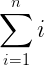
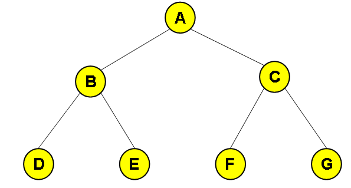
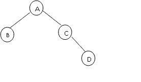
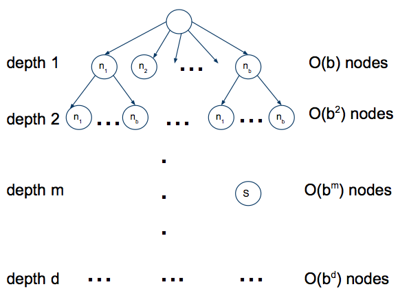
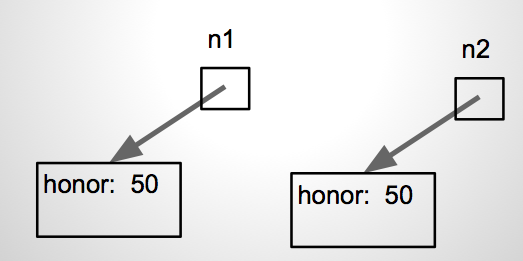

Canterbury QuestionBank
| Field | Value |
|---|---|
| ID | 633573 [created: 2013-06-19 15:29:45, author: crjjrc (xchris), avg difficulty: 2.0000] |
| Question | Suppose you try to perform a binary search on a 5-element array sorted in the reverse order of what the binary search algorithm expects. How many of the items in this array will be found if they are searched for? |
| A | 5 |
| B | 0 |
| *C* | 1 |
| D | 2 |
| E | 3 |
| Explanation | Only the middle element will be found. The remaining elements will not be contained in the subranges that we narrow our search to. |
| Tags | Contributor_Chris_Johnson, ATT-Transition-ApplyCSspeak, Skill-PureKnowledgeRecall, ATT-Type-How, Difficulty-1-Low, Block-Horizontal-2-Struct_Control, ExternalDomainReferences-1-Low, TopicSimon-Arrays, Block-Vertical-2-Block, Bloom-2-Comprehension, Language-none-none-none, LinguisticComplexity-1-Low, CS2, CodeLength-NotApplicable, TopicWG-Searching-Binary, ConceptualComplexity-2-Medium, Nested-Block-Depth-0-no_ifs_loops |
| Field | Value |
|---|---|
| ID | 632805 [created: 2013-05-24 02:38:28, author: crjjrc (xchris), avg difficulty: 0.0000] |
| Question | Which data structure used to implement |
| A | Binary search tree |
| *B* | Linked list |
| C | Sorted array |
| D | Hashtable |
| Explanation | Implementing Set.contains involves a search of the data structure. A binary search tree and a sorted array are searched in O(lg n) time, and a hashtable in O(1), assuming a sane hash function. A linked list is searched in O(n) time. |
| Tags | Contributor_Chris_Johnson, ATT-Transition-CSspeak_to_Code, ATT-Type-How, Difficulty-1-Low, SkillWG-AnalyzeCode, TopicWG-ADT-Set-Implementations, TopicSimon-AlgorithmComplex-BigO, Block-Horizontal-2-Struct_Control, ExternalDomainReferences-1-Low, Block-Vertical-4-Macro-Structure, Bloom-3-Analysis, Language-none-none-none, LinguisticComplexity-1-Low, CS2, CodeLength-NotApplicable, ConceptualComplexity-2-Medium |
| Field | Value |
|---|---|
| ID | 635053 [created: 2013-06-17 08:33:10, author: xrobert (xrobert), avg difficulty: 0.5000] |
| Question |
The simplified UML diagram above shows the relationships among Java classes Bird, Crow, and Duck. Suppose Bird has a fly(Location place) method, but we want Crows to makeNoise() just before they take off and then behave like other Birds. Assuming Crows have a makeNoise() method, we should |
| A |
Define a fly method in Crow by copying the fly code from Bird then adding in makeNoise() at the start, i.e. public void fly(Location place) {
this.makeNoise();
// [paste the body of Bird's fly method here]
}
|
| B |
Define a fly method in Crow that just consists of makeNoise(), i.e. public void fly(Location place) {
this.makeNoise();
}
|
| C |
Define a fly method in Crow that just consists of makeNoise() and this.fly(place), i.e. public void fly(Location place) {
this.makeNoise();
this.fly(place);
}
|
| *D* |
Define a fly method in Crow that just consists of makeNoise() and super.fly(place) public void fly(Location place) {
this.makeNoise();
super.fly(place);
}
|
| E |
Define a fly method in Crow that just consists of makeNoise() and Bird.fly(place); i.e. public void fly(Location place) {
this.makeNoise();
Bird.fly(place);
}
|
| Explanation |
D is the best: super.fly(place) invokes Bird's fly method, so produces fly behavior like other Birds. A would also work, but is does not take advantage of inheritance, and would be incorrect if you change the flying behavior of Birds by modifying Bird's fly method. B wouldn't involve any flight, C wouldn't terminate, and E assumes a static fly method in Bird (which would be unusual design, so I would have mentioned it). |
| Tags | Contributor_Robert_McCartney, ATT-Transition-English_to_Code, Skill-WriteCode_MeansChooseOption, ATT-Type-How, Difficulty-1-Low, Language-Java, Bloom-4-Application, CS1, TopicSimon-MethodsFuncsProcs, TopicSimon-OOconcepts, TopicSimon-OperatorOverloading, TopicSimon-Scope-Visibility |

| Field | Value |
|---|---|
| ID | 633246 [created: 2013-06-18 06:01:40, author: crjjrc (xchris), avg difficulty: 1.5000] |
| Question | For a graph with N nodes, what's the minimum number of edges it must have for it to contain a cycle? |
| A | N + 1 |
| B | N |
| C | N - 1 |
| *D* | 1 |
| E | 2 |
| Explanation | A vertex with an edge to itself is a cycle. |
| Tags | Contributor_Chris_Johnson, ATT-Transition-ApplyCSspeak, Skill-PureKnowledgeRecall, ATT-Type-How, Difficulty-1-Low, ExternalDomainReferences-1-Low, TopicWG-Graphs, TopicSimon-CollectionsExceptArray, Bloom-1-Knowledge, Language-none-none-none, LinguisticComplexity-1-Low, CS2, CodeLength-NotApplicable, ConceptualComplexity-2-Medium, Nested-Block-Depth-0-no_ifs_loops |
| Field | Value |
|---|---|
| ID | 634254 [created: 2013-06-25 02:39:10, author: edwards@cs.vt.edu (xstephen), avg difficulty: 0.0000] |
| Question |
Read the following method skeleton and choose the best expression to fill in the blank on line 8 so that the method will behave correctly: /**
* Takes a string reference and counts the number of times
* the character 'A' or 'a' appears in the string object.
* @param aString String reference to object containing chars.
* @precondition aString is not null (you may assume this is true).
* @return The number of times 'A' or 'a' appears in the string.
*/
public static int countAs(String aString) // line 1
{
int counter = __________; // line 2
int totalA = 0; // line 3
while (counter < __________) // line 4
{
if ( __________.equals("A") ) // line 5
{
totalA = totalA + __________; // line 6
}
counter++; // line 7
}
return __________; // line 8
}
|
| A | counter |
| B | true |
| C | false |
| *D* | totalA |
| E | aString |
| Explanation | The return type of the method is |
| Tags | Nested-Block-Depth-2-two-nested, ATT-Transition-ApplyCode, Contributor_Stephen_Edwards, Skill-WriteCode_MeansChooseOption, ATT-Type-How, Difficulty-1-Low, Block-Horizontal-1-Struct_Text, ExternalDomainReferences-1-Low, Block-Vertical-2-Block, TopicSimon-DataTypesAndVariables, Language-Java, Bloom-3-Analysis, TopicSimon-LoopsSubsumesOperators, CS1, LinguisticComplexity-1-Low, CodeLength-lines-06-to-24_Medium, TopicSimon-Strings |
| Field | Value |
|---|---|
| ID | 633247 [created: 2013-06-18 06:42:17, author: crjjrc (xchris), avg difficulty: 1.0000] |
| Question | Two algorithms accomplish the same task on a collection of N items. Algorithm A performs log2 N operations. Algorithm B performs log3 N operations. Under what conditions does algorithm A offer better performance? |
| A | N <= 2 |
| B | N < log2 3 |
| C | N < log3 2 |
| D | N < 8 |
| *E* | For no N. |
| Explanation | For no possible collection size N is log2 N < log3 N. |
| Tags | Contributor_Chris_Johnson, ATT-Transition-ApplyCSspeak, Skill-PureKnowledgeRecall, ATT-Type-How, Difficulty-1-Low, TopicSimon-AlgorithmComplex-BigO, Block-Horizontal-2-Struct_Control, ExternalDomainReferences-1-Low, Block-Vertical-3-Relations, Bloom-3-Analysis, Language-none-none-none, LinguisticComplexity-1-Low, CS2, CodeLength-NotApplicable, ConceptualComplexity-2-Medium, Nested-Block-Depth-0-no_ifs_loops |
| Field | Value |
|---|---|
| ID | 633241 [created: 2013-06-12 23:38:43, author: crjjrc (xchris), avg difficulty: 0.5000] |
| Question | Finding the median value in a complete and balanced binary search tree is |
| *A* | O(1) |
| B | O(log N) |
| C | O(N) |
| D | O(N2) |
| E | O(N log N) |
| Explanation | The median is the element that has M elements less than it and M elements greater than it. This can only be said of the root node in a complete and balanced binary tree. The root is accessed in constant time. |
| Tags | Contributor_Chris_Johnson, ATT-Transition-ApplyCSspeak, ATT-Type-How, Difficulty-1-Low, Block-Horizontal-2-Struct_Control, ExternalDomainReferences-1-Low, Block-Vertical-2-Block, TopicSimon-CollectionsExceptArray, Bloom-3-Analysis, Language-none-none-none, LinguisticComplexity-1-Low, CS2, CodeLength-NotApplicable, ConceptualComplexity-2-Medium, TopicWG-Trees-Search-Balanced, Nested-Block-Depth-0-no_ifs_loops |
| Field | Value |
|---|---|
| ID | 634183 [created: 2013-06-24 14:48:04, author: patitsas (xelizabeth), avg difficulty: 0.5000] |
| Question | For a heap of size n, which is indexed at 0, at what position will its last child be? |
| A | 2n + 1 |
| B | n / 2 |
| *C* | n - 1 |
| D | floor(n / 2) + 1 |
| Explanation | The last element will be at the end of the array. |
| Tags | ATT-Transition-ApplyCSspeak, Contributor_Elizabeth_Patitsas, ATT-Type-How, Difficulty-1-Low, ExternalDomainReferences-1-Low, TopicSimon-Arrays, TopicWG-Heaps, Bloom-1-Knowledge, Language-none-none-none, CS2, CodeLength-NotApplicable, ConceptualComplexity-2-Medium, TopicWG-Trees-Other |
| Field | Value |
|---|---|
| ID | 634156 [created: 2013-06-24 11:36:19, author: patitsas (xelizabeth), avg difficulty: 0.0000] |
| Question | What design stategy does Quicksort use? |
| A | Greedy |
| *B* | Divide and conquer |
| C | Dynamic programming |
| D | Brute force |
| Explanation | Quicksort is divide and conquer. |
| Tags | ATT-Transition-ApplyCSspeak, Contributor_Elizabeth_Patitsas, ATT-Type-How, Difficulty-1-Low, TopicSimon-AlgorithmComplex-BigO, ExternalDomainReferences-1-Low, Bloom-1-Knowledge, Language-none-none-none, LinguisticComplexity-1-Low, CS2, CodeLength-NotApplicable, TopicWG-Sorting-NlogN |
| Field | Value |
|---|---|
| ID | 634154 [created: 2013-06-24 11:29:26, author: patitsas (xelizabeth), avg difficulty: 1.0000] |
| Question | If you did not have a base case in a recursive function in C, and were working on a modern Unix-based system, what would most likely happen? |
| A | Segmentation fault |
| B | Stack overflow error |
| *C* | C wouldn’t complain, but your computer would crash |
| D | Nothing, that’s fine |
| Explanation | It really depends on the program for whether it would be B or C. Both can be argued to be correct. |
| Tags | ATT-Transition-ApplyCSspeak, Contributor_Elizabeth_Patitsas, ATT-Type-How, Difficulty-2-Medium, ExternalDomainReferences-1-Low, Language-C, Bloom-1-Knowledge, LinguisticComplexity-1-Low, CS2, TopicWG-Runtime-StorageManagement, CodeLength-NotApplicable, MultipleAnswers-See-Explanation, TopicSimon-Recursion, ConceptualComplexity-2-Medium |
| Field | Value |
|---|---|
| ID | 634956 [created: 2013-06-27 04:51:37, author: mikeyg (xmikey), avg difficulty: 1.0000] |
| Question |
The following Python method determines whether or not a list of values, passed in as a parameter, has any duplicate values. What is the Big-Oh running time of this algorithm? def duplicates(lov): dupCount = 0 if (lov[inner] == lov[outer]): dupCount = dupCount + 1 inner = inner + 1 outer = outer + 1 if (dupCount == 0): |
| A | O(1) |
| B | O(n) |
| C | O(n log2 n) |
| *D* | O(n2) |
| E | O(n3) |
| Explanation | Each item in the list is compared against each other item in the list: a classic example of the all-pairs programming pattern. The first item is compared against n-1 other values. The second item is compared against n-2 other values, etc. The total number of comparisons is  |
| Tags | Nested-Block-Depth-3-three-nested, ATT-Transition-Code_to_CSspeak, Contributor_Michael_Goldweber, ATT-Type-How, SkillWG-AnalyzeCode, Difficulty-2-Medium, TopicSimon-AlgorithmComplex-BigO, Block-Horizontal-2-Struct_Control, ExternalDomainReferences-1-Low, Block-Vertical-4-Macro-Structure, Bloom-3-Analysis, Language-Python, CS1, CodeLength-lines-00-to-06_Low |
| Field | Value |
|---|---|
| ID | 633227 [created: 2013-06-12 22:57:35, author: crjjrc (xchris), avg difficulty: 0.0000] |
| Question |
What is printed when the following program runs? public class Main {
public static boolean getTrue() {
System.out.print("T");
return true;
}
public static boolean getFalse() {
System.out.print("F");
return false;
}
public static void main(String[] args) {
getTrue() || getTrue();
}
}
|
| A | TT |
| *B* | T |
| C | F |
| D | TF |
| E | Nothing is printed. |
| Explanation | If the first operand for || is true, as is the case here, the second is not evaluated. |
| Tags | Contributor_Chris_Johnson, ATT-Transition-Code_to_English, Skill-Trace_IncludesExpressions, ATT-Type-How, Block-Horizontal-2-Struct_Control, Block-Vertical-4-Macro-Structure, Language-Java, Bloom-2-Comprehension, TopicSimon-LogicalOperators, CS1, LinguisticComplexity-1-Low, TopicSimon-MethodsFuncsProcs, CodeLength-lines-06-to-24_Medium, ConceptualComplexity-1-Low, Nested-Block-Depth-0-no_ifs_loops |
| Field | Value |
|---|---|
| ID | 633298 [created: 2013-06-18 07:59:20, author: crjjrc (xchris), avg difficulty: 2.0000] |
| Question | You are storing a complete binary tree in an array, with the root at index 0. At what index is node i's parent? |
| A | 2i |
| B | 2i + 1 |
| C | i + i + 2 |
| D | i / 2 + 1 |
| *E* | (i - 1) / 2 |
| Tags | Contributor_Chris_Johnson, ATT-Transition-ApplyCSspeak, Skill-PureKnowledgeRecall, ATT-Type-How, Difficulty-1-Low, Block-Horizontal-2-Struct_Control, ExternalDomainReferences-1-Low, Block-Vertical-1-Atom, TopicSimon-CollectionsExceptArray, Bloom-1-Knowledge, Language-none-none-none, LinguisticComplexity-1-Low, CS2, CodeLength-NotApplicable, ConceptualComplexity-2-Medium, TopicWG-Trees-Other, Nested-Block-Depth-0-no_ifs_loops |
| Field | Value |
|---|---|
| ID | 634959 [created: 2013-06-13 11:30:52, author: kate (xkate), avg difficulty: 0.0000] |
| Question | Which of the following abstract datatypes would be the best choice for part of the implementation of the part of a compiler that determines whether the parentheses in a program are balanced? |
| *A* | A Stack |
| B | A Queue |
| C | A List |
| D | A PriorityQueue |
| E | A Dictionary |
| Explanation | A close parenthesis must match the most recently entered open parenthesis. So for example, the sequence )()( doesn't match, while ()() and (()) do, even though they all have two open and two close parentheses. To make this work, you can push each open parenthesis on a Stack, and pop it off each time you see a close parenthesis. The last-in-first-out nature of a Stack makes it easy to determine whether the parentheses are balanced. |
| Tags | ATT-Transition-ApplyCSspeak, Contributor_Kate_Sanders, Skill-DesignProgramWithoutCoding, ATT-Type-How, Difficulty-2-Medium, Block-Horizontal-3-Funct_ProgGoal, ExternalDomainReferences-2-Medium, Block-Vertical-4-Macro-Structure, Bloom-5-Synthesis, Language-none-none-none, LinguisticComplexity-2-Medium, CSother, CodeLength-NotApplicable, TopicSimon-ProgramDesign, Nested-Block-Depth-0-no_ifs_loops |
| Field | Value |
|---|---|
| ID | 634960 [created: 2013-06-19 15:55:57, author: xrobert (xrobert), avg difficulty: 0.0000] |
| Question |
Given the above binary tree rooted at Node A, what is the order of nodes visited by an inorder search? |
| A | A, B, C, D, E, F, G |
| B | A, B, D, E, C, F, G |
| *C* | D, B, E, A, F, C, G |
| D | D, E, B, F, G, C, A |
| E | G, F, E, D, C, B, A |
| Explanation |
An inorder search of a binary tree is: visit the left subtree, visit the root, visit the right subtree. It procedes as Visit left subtree: Visit its left subtree: Visit D Visit B (its root) Visit its right subtree: Visit E Visit A (the root) Visit right subtree: Visit its left subtree: Visit F Visit C (its root) Visit its right subtree: Visit G |
| Tags | ATT-Transition-CSspeak_to_English, Contributor_Robert_McCartney, ATT-Type-How, SkillWG-AnalyzeCode, Difficulty-2-Medium, Language-none-none-none, CS2, ConceptualComplexity-1-Low, TopicWG-Trees-Other |

| Field | Value |
|---|---|
| ID | 633228 [created: 2013-06-12 23:02:26, author: crjjrc (xchris), avg difficulty: 0.0000] |
| Question |
What is printed when the following program runs? public class Main {
public static boolean getTrue() {
System.out.print("T");
return true;
}
public static boolean getFalse() {
System.out.print("F");
return false;
}
public static void main(String[] args) {
getTrue() || getFalse();
}
}
|
| A | TF |
| B | F |
| *C* | T |
| D | TT |
| E | Nothing is printed |
| Explanation | If the first operand for || is true, as is the case here, the second is not evaluated. |
| Tags | Contributor_Chris_Johnson, ATT-Transition-Code_to_English, Skill-Trace_IncludesExpressions, ATT-Type-How, Difficulty-1-Low, Block-Horizontal-2-Struct_Control, ExternalDomainReferences-1-Low, Block-Vertical-4-Macro-Structure, Language-Java, Bloom-2-Comprehension, TopicSimon-LogicalOperators, CS1, LinguisticComplexity-1-Low, TopicSimon-MethodsFuncsProcs, CodeLength-lines-06-to-24_Medium, ConceptualComplexity-1-Low, Nested-Block-Depth-0-no_ifs_loops |
| Field | Value |
|---|---|
| ID | 633895 [created: 2013-06-23 13:10:08, author: patitsas (xelizabeth), avg difficulty: 1.0000] |
| Question | Kexin is hashing the values 9, 45, 22, 48, 38 into a hash table of size 20. Which hash function will give her no collisions? |
| A | h(k) = k % 10 |
| B | h(k) = k / 10 |
| C | h(k) = (k % 10) + (k / 10) |
| *D* | h(k) = (k % 10) - (k / 10) |
| Explanation | A will collide on the 48/38; B will collide with 45/48; C will collide with 9/45. |
| Tags | ATT-Transition-ApplyCSspeak, Contributor_Elizabeth_Patitsas, ATT-Type-How, Difficulty-2-Medium, ExternalDomainReferences-1-Low, TopicWG-ChoosingAppropriateDS, TopicWG-Hashing-HashTables, Bloom-3-Analysis, Language-none-none-none, LinguisticComplexity-1-Low, CS2, CodeLength-NotApplicable |
| Field | Value |
|---|---|
| ID | 634955 [created: 2013-06-19 16:04:01, author: xrobert (xrobert), avg difficulty: 0.0000] |
| Question |
Given the above binary tree rooted at Node A, what is the order of nodes visited by a postorder search? |
| A | A, B, C, D, E, F, G |
| B | A, B, D, E, C, F, G |
| C | D, B, E, A, F, C, G |
| *D* | D, E, B, F, G, C, A |
| E | G, F, E, D, C, B, A |
| Explanation |
A postorder search of a tree is: visit the left subtree, visit the right subtree, visit the root It procedes as Visit left subtree: Visit its left subtree: Visit D Visit its right subtree: Visit E Visit B (its root) Visit right subtree: Visit its left subtree: Visit F Visit its right subtree: Visit G Visit C (its root) Visit A (the root) The order of nodes visited corresponds to answer D |
| Tags | ATT-Transition-CSspeak_to_English, Contributor_Robert_McCartney, Difficulty-2-Medium, Language-none-none-none, CS2, CodeLength-NotApplicable, TopicWG-Trees-Other |

| Field | Value |
|---|---|
| ID | 633618 [created: 2013-06-22 07:01:21, author: jspacco (xjaime), avg difficulty: 2.0000] |
| Question |
True or False: Breadth-first search (BFS) and Depth-first search (DFS) visit nodes of a graph in the same order only if the graph looks like a linear chain, or linked list, and the traversal starts at one of the ends. For example, BFS and DFS starting at node A are the same for the following graph: A <-> B <-> C |
| A | True |
| *B* | False |
| Explanation | We could add any number of nodes to node B, and visit nodes in the same order starting at node A and node B. |
| Tags | ATT-Transition-ApplyCSspeak, Contributor_Jaime_Spacco, ATT-Type-How, Difficulty-1-Low, TopicSimon-AlgorithmComplex-BigO, Block-Horizontal-2-Struct_Control, ExternalDomainReferences-1-Low, TopicWG-Graphs, Block-Vertical-4-Macro-Structure, Bloom-3-Analysis, Language-none-none-none, LinguisticComplexity-1-Low, CS2, CodeLength-NotApplicable, ConceptualComplexity-2-Medium, Nested-Block-Depth-0-no_ifs_loops |
| Field | Value |
|---|---|
| ID | 634944 [created: 2013-06-27 05:20:14, author: mikeyg (xmikey), avg difficulty: 1.0000] |
| Question | For the Insertion sort algorithm; what is its best case and worst case performance? |
| *A* |
Best: O(n) Worst: O(n2) |
| B | Best: O(n) |
| C | Best: O(log2 n) |
| D | Best: O(n2) |
| E | None of the above. |
| Explanation | Insertion sort, if given an already sorted list, will still perform O(n) comparisons to ascertain the list is sorted. If the list is "reverse sorted," then the first pass will require 1 exchange. The second pass will require 2 exchanges, etc. Hence, in the worst case, O(n2) exchanges. |
| Tags | Nested-Block-Depth-2-two-nested, ATT-Transition-Code_to_CSspeak, Contributor_Michael_Goldweber, Skill-PureKnowledgeRecall, ATT-Type-How, Difficulty-2-Medium, TopicSimon-AlgorithmComplex-BigO, Block-Horizontal-2-Struct_Control, ExternalDomainReferences-1-Low, Bloom-4-Application, Language-none-none-none, CS1, LinguisticComplexity-1-Low, CodeLength-NotApplicable, TopicWG-Sorting-Quadratic |
| Field | Value |
|---|---|
| ID | 634947 [created: 2013-06-27 05:15:25, author: mikeyg (xmikey), avg difficulty: 1.0000] |
| Question | For the selection sort algorithm; what is its best case and worst case running time? |
| A | Best: O(1) |
| B | Best: O(n) |
| C | Best: O(log2 n) |
| *D* |
Best: O(n2) Worst: O(n2) |
| E | None of the above. |
| Explanation | Selection sort repeatedly runs the Find-largest algorithm as its helper function. So, regardless of the list's initial ordering, Find-largest will cost n-1 comparisons for the first pass, n-2 for the second, etc. Hence selection sort's run time performence is independent of the list's initial ordering: O(n2) |
| Tags | Nested-Block-Depth-2-two-nested, ATT-Transition-Code_to_CSspeak, Contributor_Michael_Goldweber, Skill-PureKnowledgeRecall, ATT-Type-How, Difficulty-2-Medium, TopicSimon-AlgorithmComplex-BigO, Block-Horizontal-2-Struct_Control, ExternalDomainReferences-1-Low, Block-Vertical-4-Macro-Structure, Bloom-4-Application, Language-none-none-none, CS1, LinguisticComplexity-1-Low, CodeLength-NotApplicable, TopicWG-Sorting-Quadratic |
| Field | Value |
|---|---|
| ID | 633400 [created: 2013-06-19 07:39:28, author: crjjrc (xchris), avg difficulty: 0.0000] |
| Question | You see the expression |
| A | int |
| *B* | short |
| C | float |
| D | double |
| E | long |
| Explanation | Shorts can only hold values in [-32768, 32767]. |
| Tags | Contributor_Chris_Johnson, ATT-Transition-CSspeak_to_Code, Skill-Trace_IncludesExpressions, ATT-Type-How, Difficulty-1-Low, Block-Horizontal-1-Struct_Text, ExternalDomainReferences-1-Low, Block-Vertical-1-Atom, TopicSimon-DataTypesAndVariables, Bloom-1-Knowledge, Language-Java, CS1, LinguisticComplexity-1-Low, CodeLength-lines-00-to-06_Low, ConceptualComplexity-1-Low, Nested-Block-Depth-0-no_ifs_loops |
| Field | Value |
|---|---|
| ID | 633397 [created: 2013-06-19 07:53:52, author: crjjrc (xchris), avg difficulty: 2.0000] |
| Question | Suppose you try to perform a binary search on the unsorted array {1, 4, 3, 7, 15, 9, 24}. Which element will not be found when you try searching for it? |
| A | 7 |
| B | 1 |
| C | 9 |
| *D* | 15 |
| E | 24 |
| Explanation | The answer is 15. The first check will look at 7. 15 is greater than 7, so we search to its right. The second check will look at 9. 15 is greater than 9, so we search to its right. The third check will look at 24. 15 is less than 24, so we look to its left. However, our range has just been inverted and our searching stops, not having found 15. |
| Tags | Contributor_Chris_Johnson, ATT-Transition-ApplyCSspeak, Skill-PureKnowledgeRecall, ATT-Type-How, Difficulty-1-Low, Block-Horizontal-2-Struct_Control, ExternalDomainReferences-1-Low, TopicSimon-Arrays, Block-Vertical-2-Block, Bloom-2-Comprehension, Language-none-none-none, LinguisticComplexity-1-Low, CS2, CodeLength-NotApplicable, TopicWG-Searching-Binary, ConceptualComplexity-2-Medium, Nested-Block-Depth-0-no_ifs_loops |
| Field | Value |
|---|---|
| ID | 634952 [created: 2013-06-19 16:10:24, author: xrobert (xrobert), avg difficulty: 0.0000] |
| Question |
 Given the above binary tree rooted at Node A, what is the order of nodes visited by a breadth-first traversal? |
| *A* | A, B, C, D, E, F, G |
| B | A, B, D, E, C, F, G |
| C | D, B, E, A, F, C, G |
| D | D, E, B, F, G, C, A |
| E | G, F, E, D, C, B, A |
| Explanation |
A breadth-first traversal procedes by levels -- the root, then all of the nodes that are children of the root, then all of the nodes that are grandchildren of the root, etc. In this case we get: Visit A (the root) Visit B, C (children of the root) Visit D, E, F, G (grandchildren of the root) This corresponds to answer A. |
| Tags | ATT-Transition-CSspeak_to_English, Contributor_Robert_McCartney, ATT-Type-How, Difficulty-2-Medium, Language-none-none-none, CS2, CodeLength-NotApplicable, TopicWG-Trees-Other |
| Field | Value |
|---|---|
| ID | 632111 [created: 2013-06-17 20:52:33, author: marzieh (xmarzieh), avg difficulty: 1.0000] |
| Question |
What node will be in a same rank (position) if the following tree is traversed by preorder, postorder and inorder algorithm?  |
| A | A |
| B | B |
| *C* | C |
| D | D |
| Field | Value |
|---|---|
| ID | 634167 [created: 2013-06-24 14:21:36, author: patitsas (xelizabeth), avg difficulty: 1.0000] |
| Question |
Fill in the single missing line of code: p = 27;
r = &p;
// MISSING LINE |
| A | *q = *r; |
| *B* | q = &r; |
| C | **q = p; |
| D | q = &&p; |
| E | *q = *p; |
| Explanation | B gets q to point to r, which points to p. |
| Tags | Contributor_Elizabeth_Patitsas, ATT-Transition-CSspeak_to_Code, Skill-WriteCode_MeansChooseOption, ATT-Type-How, Difficulty-2-Medium, Block-Horizontal-1-Struct_Text, ExternalDomainReferences-1-Low, TopicSimon-Assignment, Block-Vertical-2-Block, Language-C, TopicSimon-DataTypesAndVariables, Bloom-1-Knowledge, LinguisticComplexity-1-Low, CS2, TopicWG-Pointers-ButNotReferences, CodeLength-lines-00-to-06_Low, Nested-Block-Depth-0-no_ifs_loops |
| Field | Value |
|---|---|
| ID | 632105 [created: 2013-06-17 20:43:58, author: marzieh (xmarzieh), avg difficulty: 1.0000] |
| Question | What would be the performance of removeMin and insert methods in a priority queue if it is implemented by a sorted list? |
| A | O(1) , O(1) |
| *B* | O(1) , O(n) |
| C | O(n) , O(1) |
| D | O(n) , O(n) |
| Field | Value |
|---|---|
| ID | 632090 [created: 2013-06-14 23:50:19, author: tclear (xtony), avg difficulty: 0.0000] |
| Question |
What is the value of j after this code is executed? int i = 6, j = 10; j += i; |
| A | 4 |
| B | 6 |
| C | 10 |
| *D* | 16 |
| E | Undefined |
| Explanation | The value of variable i (6) is added to that of variable j (10) resulting in 16 as the new value of j |
| Tags | Contributor_Tony_Clear, Skill-Trace_IncludesExpressions, Difficulty-1-Low, Block-Horizontal-1-Struct_Text, TopicSimon-ArithmeticOperators, TopicSimon-Assignment, Block-Vertical-2-Block, Language-C, Bloom-2-Comprehension, CS1, CodeLength-lines-00-to-06_Low |
| Field | Value |
|---|---|
| ID | 635019 [created: 2013-06-17 18:06:38, author: xrobert (xrobert), avg difficulty: 0.0000] |
| Question |
Suppose q is an instance of a queue that can store Strings, and I execute the following statements starting with q empty: 1. q.enqueue("Sweden");
2. q.enqueue("is");
3. q.enqueue("my");
4. String w = q.dequeue();
5. String x = q.peek();
6. q.enqueue("neighbor");
7. String y = q.dequeue();
8. String z = q.dequeue();
What is the value of z after executing these expressions in order? |
| A | "Sweden" |
| B | "is" |
| *C* | "my" |
| D | "neighbor" |
| E | None of the above |
| Explanation |
If we consider the contents of the queue after each expression (listing contents from head to tail), we have 1. ["Sweden"] 2. ["Sweden" "is"] 3. ["Sweden" "is" "my"] 4. ["is" "my"] (and w gets set to "Sweden") 5. ["is" "my"] (and x gets set to "is") 6. ["is" "my" "neighbor"] 7. ["my" "neighbor"] (and y gets set to "is") 8. [ "neighbor"] (and z gets set to "my") |
| Tags | ATT-Transition-Code_to_CSspeak, Contributor_Robert_McCartney, TopicWG-ADT-Queue-DefInterfaceUse, Skill-Trace_IncludesExpressions, ATT-Type-How, Difficulty-1-Low, Language-Java, Bloom-3-Analysis, CS1, CS2, CodeLength-lines-06-to-24_Medium, TopicSimon-Strings |
| Field | Value |
|---|---|
| ID | 634151 [created: 2013-06-24 11:15:44, author: patitsas (xelizabeth), avg difficulty: 0.0000] |
| Question | Which of the following parts of a process’ memory is the largest? |
| A | The code area |
| B | The globals area |
| *C* | The heap |
| D | The stack |
| Explanation | Heap is the largest. |
| Tags | ATT-Transition-ApplyCSspeak, Contributor_Elizabeth_Patitsas, Skill-PureKnowledgeRecall, ATT-Type-How, Difficulty-1-Low, ExternalDomainReferences-1-Low, Language-C, Language-Cplusplus, Bloom-1-Knowledge, LinguisticComplexity-1-Low, CS2, TopicWG-Runtime-StorageManagement, CodeLength-NotApplicable, ConceptualComplexity-1-Low |
| Field | Value |
|---|---|
| ID | 634145 [created: 2013-06-24 10:06:00, author: patitsas (xelizabeth), avg difficulty: 0.0000] |
| Question | Prim’s Algorithm is used to solve what problem? |
| A | Finding the lowest parent of a heap |
| *B* | Minimum spanning tree |
| C | Shortest path in a graph from a source |
| D | Sorting integers |
| Explanation | Prim's is used for MST. |
| Tags | ATT-Transition-ApplyCSspeak, Contributor_Elizabeth_Patitsas, ATT-Type-How, Difficulty-1-Low, ExternalDomainReferences-1-Low, TopicWG-Graphs, Bloom-1-Knowledge, Language-none-none-none, LinguisticComplexity-1-Low, CS2, CodeLength-NotApplicable, ConceptualComplexity-1-Low |
| Field | Value |
|---|---|
| ID | 633268 [created: 2013-06-21 08:44:26, author: jspacco (xjaime), avg difficulty: 2.0000] |
| Question |
Suppose you have a tree with a maximum depth of d and an average branching factor of b (i.e. each node has b children). You are searching for a particular node S located at depth m (m <= d). You don't know where the node S is located, just that it is at depth m. What is an upper bound on the space complexity of breadth-first search (i.e. big-O notation) to find the node S starting from the root? |
| A | O(d * b) |
| *B* | O(bd) |
| C | O(db) |
| D | O(b * m) |
| E | O(bm) |
| Explanation |
In the worst case, we need to store all of the nodes, because the very last node we check at the maximum depth will be S. The deepest nodes of the graph will have O(bd) nodes, and in the worst case we would need to store all of these nodes.  |
| Tags | ATT-Transition-ApplyCSspeak, Contributor_Jaime_Spacco, SkillWG-AnalyzeCode, ATT-Type-Why, Difficulty-2-Medium, TopicSimon-AlgorithmComplex-BigO, Block-Horizontal-2-Struct_Control, ExternalDomainReferences-1-Low, TopicWG-Graphs, Block-Vertical-4-Macro-Structure, Bloom-3-Analysis, Language-none-none-none, CS2, LinguisticComplexity-2-Medium, CodeLength-NotApplicable, ConceptualComplexity-2-Medium, TopicWG-Trees-Other, Nested-Block-Depth-0-no_ifs_loops |
| Field | Value |
|---|---|
| ID | 630945 [created: 2013-06-13 11:17:07, author: kate (xkate), avg difficulty: 1.0000] |
| Question | Which of the following abstract datatypes would be the best choice for part of the implementation of the back button on a Web browser? |
| *A* | a Stack |
| B | a Queue |
| C | a Priority Queue |
| D | a List |
| E | a Dictionary |
| Explanation | When you click on the back button, you should see the last page you visited, so the datatype that stores the previously visited webpages must be last-in-first-out. Of the abstract datatypes listed, Stack is the only one that is last-in-first-out. |
| Tags | ATT-Transition-ApplyCSspeak, Contributor_Kate_Sanders, Skill-DesignProgramWithoutCoding, ATT-Type-How, Difficulty-2-Medium, Block-Horizontal-3-Funct_ProgGoal, ExternalDomainReferences-2-Medium, Block-Vertical-4-Macro-Structure, Bloom-5-Synthesis, Language-none-none-none, CS2, LinguisticComplexity-2-Medium, CodeLength-NotApplicable, TopicSimon-ProgramDesign, ConceptualComplexity-2-Medium, Nested-Block-Depth-0-no_ifs_loops |
| Field | Value |
|---|---|
| ID | 630947 [created: 2013-06-13 11:22:53, author: kate (xkate), avg difficulty: 0.0000] |
| Question | Which of the following abstract datatypes would be the best choice for part of the implementation of a program modeling the arrival of patients to an emergency room in a hospital? |
| A | a Stack |
| B | a Queue |
| C | A List |
| *D* | a PriorityQueue |
| E | a Dictionary |
| Explanation | In an emergency room, you want to serve patients in the order of how urgent their condition is, and if two patients have equally urgent conditions, in the order that they arrived. A PriorityQueue is the only abstract datatype listed that meets both of these conditions. |
| Tags | ATT-Transition-ApplyCSspeak, Contributor_Kate_Sanders, Skill-DesignProgramWithoutCoding, ATT-Type-How, Difficulty-2-Medium, Block-Horizontal-3-Funct_ProgGoal, ExternalDomainReferences-2-Medium, Block-Vertical-4-Macro-Structure, Bloom-5-Synthesis, Language-none-none-none, CS2, LinguisticComplexity-3-High, CodeLength-NotApplicable, TopicSimon-ProgramDesign, Nested-Block-Depth-0-no_ifs_loops |
| Field | Value |
|---|---|
| ID | 633266 [created: 2013-06-18 06:45:34, author: crjjrc (xchris), avg difficulty: 1.0000] |
| Question | Two algorithms accomplish the same task on a collection of N items. Algorithm A performs N/2 operations. Algorithm B performs N log N operations. Under what conditions does algorithm A offer better performance? |
| A | N <= 4 |
| B | N > 8 |
| C | N > 2 |
| *D* | For all N. |
| E | For no N. |
| Explanation | For all legal collection sizes, N/2 < N log N. |
| Tags | Contributor_Chris_Johnson, ATT-Transition-ApplyCSspeak, Skill-PureKnowledgeRecall, ATT-Type-How, Difficulty-1-Low, TopicSimon-AlgorithmComplex-BigO, Block-Horizontal-2-Struct_Control, ExternalDomainReferences-1-Low, Block-Vertical-4-Macro-Structure, Bloom-2-Comprehension, Language-none-none-none, LinguisticComplexity-1-Low, CS2, CodeLength-NotApplicable, ConceptualComplexity-2-Medium, Nested-Block-Depth-0-no_ifs_loops |
| Field | Value |
|---|---|
| ID | 633260 [created: 2013-06-18 06:59:27, author: crjjrc (xchris), avg difficulty: 1.0000] |
| Question | When is an adjacency matrix a good choice for implementing a graph? |
| A | When the graph is undirected. |
| *B* | When the graph is nearly complete. |
| C | When a graph has few edges. |
| D | When the graph contains no cycles. |
| E | When the graph is connected. |
| Explanation | The adjacency matrix will compactly and efficiently store edges when it contains little wasted space. In a complete graph, each vertex shares an edge with each other vertex, meaning all elements in the adjacency matrix will be used. |
| Tags | Contributor_Chris_Johnson, ATT-Transition-ApplyCSspeak, Skill-PureKnowledgeRecall, ATT-Type-How, Difficulty-1-Low, TopicSimon-AlgorithmComplex-BigO, Block-Horizontal-2-Struct_Control, ExternalDomainReferences-1-Low, TopicWG-Graphs, Block-Vertical-4-Macro-Structure, Bloom-3-Analysis, Language-none-none-none, LinguisticComplexity-1-Low, CS2, CodeLength-NotApplicable, ConceptualComplexity-1-Low, Nested-Block-Depth-0-no_ifs_loops |
| Field | Value |
|---|---|
| ID | 634147 [created: 2013-06-24 10:13:14, author: patitsas (xelizabeth), avg difficulty: 1.0000] |
| Question | What is true about the pivot in quicksort? |
| A | Before partitioning, it is always the smallest element in the list |
| B | After partitioning, the pivot will always be in the centre of the list |
| *C* | After partitioning, the pivot will never move again |
| D | A random choice of pivot is always the optimal choice, regardless of input |
| Explanation | As the pivot will be to the right of all smaller elements and to the left of all larger elements, it is in the same position it will be when the array is sorted. |
| Tags | ATT-Transition-ApplyCSspeak, Contributor_Elizabeth_Patitsas, ATT-Type-Why, Difficulty-2-Medium, ExternalDomainReferences-1-Low, Bloom-1-Knowledge, Language-none-none-none, LinguisticComplexity-1-Low, CS2, CodeLength-NotApplicable, TopicWG-Sorting-NlogN, ConceptualComplexity-1-Low |
| Field | Value |
|---|---|
| ID | 633259 [created: 2013-06-18 07:06:15, author: crjjrc (xchris), avg difficulty: 1.0000] |
| Question | When is an adjacency list a good choice for implementing a graph? |
| A | When the graph is undirected. |
| B | When the graph is nearly complete. |
| *C* | When a graph has few edges. |
| D | When the graph contains no cycles. |
| E | When the graph is connected. |
| Explanation | With adjacency lists are used, each vertex stores its own list of vertices it's connected to. When a graph contains few edges, these lists will be very short and will likely consume less memory than the adjacency matrix. |
| Tags | Contributor_Chris_Johnson, ATT-Transition-ApplyCSspeak, Skill-PureKnowledgeRecall, ATT-Type-How, Difficulty-1-Low, TopicSimon-AlgorithmComplex-BigO, Block-Horizontal-2-Struct_Control, ExternalDomainReferences-1-Low, TopicWG-Graphs, Block-Vertical-4-Macro-Structure, Bloom-3-Analysis, Language-none-none-none, LinguisticComplexity-1-Low, CS2, CodeLength-NotApplicable, ConceptualComplexity-2-Medium, Nested-Block-Depth-0-no_ifs_loops |
| Field | Value |
|---|---|
| ID | 633257 [created: 2013-06-18 07:17:06, author: crjjrc (xchris), avg difficulty: 2.0000] |
| Question | You've got an algorithm that is O(N2). On the first run, you feed it a collection of size M. On the second run, you feed it a collection of size M / 2. Assuming each run has worst-case performance, how much time does the second run take? |
| *A* | 1/4 of the first |
| B | 1/2 of the first |
| C | 2/3 of the first |
| D | 3/4 of the first |
| E | 1/8 of the first |
| Explanation | The first run took time proportional to M2. The second run took (M/2)2, or M2/4. The second run is 1/4 of the first. |
| Tags | Contributor_Chris_Johnson, ATT-Transition-ApplyCSspeak, Skill-PureKnowledgeRecall, ATT-Type-How, Difficulty-1-Low, TopicSimon-AlgorithmComplex-BigO, Block-Horizontal-2-Struct_Control, ExternalDomainReferences-1-Low, Block-Vertical-2-Block, Bloom-2-Comprehension, Language-none-none-none, LinguisticComplexity-1-Low, CS2, CodeLength-NotApplicable, ConceptualComplexity-1-Low, Nested-Block-Depth-0-no_ifs_loops |
| Field | Value |
|---|---|
| ID | 633245 [created: 2013-06-18 05:59:09, author: crjjrc (xchris), avg difficulty: 1.0000] |
| Question | Two algorithms accomplish the same task on a collection of N items. Algorithm A performs N2 operations. Algorithm B performs 10N operations. Under what conditions does algorithm A offer better performance? |
| *A* | N < 10 |
| B | N < 100 |
| C | N > 10 |
| D | For all N. |
| E | For no N. |
| Explanation | The two algorithms offer equal performance when N = 10. For N greater than 10, N2 > 10N. |
| Tags | Contributor_Chris_Johnson, ATT-Transition-ApplyCSspeak, Skill-PureKnowledgeRecall, ATT-Type-How, Difficulty-2-Medium, TopicSimon-AlgorithmComplex-BigO, Block-Horizontal-2-Struct_Control, Block-Vertical-3-Relations, Bloom-2-Comprehension, Language-none-none-none, LinguisticComplexity-1-Low, CS2, CodeLength-NotApplicable, ConceptualComplexity-2-Medium, Nested-Block-Depth-0-no_ifs_loops |
| Field | Value |
|---|---|
| ID | 635006 [created: 2013-06-17 16:42:33, author: xrobert (xrobert), avg difficulty: 0.0000] |
| Question |
1. public BallPanel extends javax.swing.JPanel {
2. private Ball[] _balls;
3. public BallPanel(int numberOfBalls){
4. ??????
5. for (int i=0;i<_balls.length;i++)
6. _balls[i] = new Ball();
7. }
8. }
We need to add something at line 4 above to avoid an error in line 5. Which of the following line 4 expressions fix the error in line 5? |
| A | super(); |
| B | _balls.setLength(numberOfBalls); |
| *C* | _balls = new Ball[numberOfBalls]; |
| D | |
| E | B, C, and D all work. |
| Explanation |
The problem with line 5 (without adding line 4) is that _balls is declared, but not instantiated as an array, so _balls is null. The code compiles fine (assuming you have a class Ball that has a constructor with no parameters), but will crash at run time if you instantiate a BallPanel. B and D wouldn't help: B would crash at run time for the same reason as 5, and D gives a compile-time error since length is not directly settable for a Java array. A would work, but would have no effect on the problem. |
| Tags | Contributor_Robert_McCartney, ATT-Type-How, Difficulty-2-Medium, TopicSimon-Arrays, TopicSimon-Assignment, Language-Java, CS1, LinguisticComplexity-1-Low, CodeLength-lines-06-to-24_Medium, Nested-Block-Depth-1 |
| Field | Value |
|---|---|
| ID | 633279 [created: 2013-06-21 09:08:12, author: patitsas (xelizabeth), avg difficulty: 0.0000] |
| Question |
Which of the following makes an appropriate pre-condition for this code? // calculates and returns a percentage given a sum and a length (n)
// <missing pre-condition>
// POST: none
return (sum / n) * 100;
}
|
| A | PRE: sum < 100 |
| *B* | PRE: n != 0 |
| C | PRE: sum != NULL and n != NULL |
| D | PRE: none |
| Explanation | The code will faill if n = 0, as it will divide by 0. |
| Tags | Contributor_Elizabeth_Patitsas, ATT-Transition-Code_to_CSspeak, ATT-Type-How, SkillWG-AnalyzeCode, Difficulty-2-Medium, ExternalDomainReferences-1-Low, Block-Horizontal-3-Funct_ProgGoal, Block-Vertical-3-Relations, Language-C, Bloom-3-Analysis, LinguisticComplexity-1-Low, CS2, CodeLength-lines-00-to-06_Low, TopicSimon-ProgrammingStandards, ConceptualComplexity-1-Low, Nested-Block-Depth-0-no_ifs_loops, TopicSimon-Testing |
| Field | Value |
|---|---|
| ID | 629623 [created: 2013-06-10 10:14:09, author: kate (xkate), avg difficulty: 0.0000] |
| Question |
Consider writing a program to be used by a farm to keep track of information about the fruits and vegetables they sell. For each sale, they would like to keep track of the type of item (eggplant, tomato, etc.), the quantity sold, the price, and the market at which the sale was made. Which of the following is the best way to represent the information? |
| *A* | Define one class, |
| B | Define one superclass, |
| C | Define five unrelated classes: |
| D | Define five classes: |
| E | Define five classes: |
| Explanation |
Which classes you define depends generally on the needs of the software. It might be good to have But of the choices given, A is the best. We can rule out choices B, C, D, and E because price and quantity don't need data and associated methods of their own and are most appropriately modeled as fields in the |
| Tags | Contributor_Kate_Sanders, Skill-DesignProgramWithoutCoding, ATT-Transition-English_to_CSspeak, Contributor_Stephen_Edwards, ATT-Type-How, Difficulty-2-Medium, ExternalDomainReferences-2-Medium, Block-Vertical-3-Relations, Language-Java, Bloom-5-Synthesis, CS1, LinguisticComplexity-1-Low, TopicSimon-OOconcepts, CodeLength-lines-00-to-06_Low, ConceptualComplexity-2-Medium, Nested-Block-Depth-0-no_ifs_loops |
| Field | Value |
|---|---|
| ID | 629642 [created: 2013-06-10 11:02:04, author: xrobert (xrobert), avg difficulty: 1.0000] |
| Question |
The word |
| A |
|
| B | Objects of type |
| C | All concrete subclasses of |
| *D* | Both B and C are true |
| E | All of the above |
| Explanation | An object cannot be directly instantiated from an abstract class, i.e. |
| Tags | Contributor_Robert_McCartney |

| Field | Value |
|---|---|
| ID | 629645 [created: 2013-06-10 11:08:26, author: kate (xkate), avg difficulty: 1.0000] |
| Question |
Suppose you are writing a Java program to be used to manage information about the inventory in a store. The store’s products include pagers, cell phones, and cameras. The cell phones are used for both communication and taking pictures, the pagers are only used for communication, and the cameras are used for taking pictures. Assume that a |
| A | Define two subclasses of the |
| *B* | Define three subclasses of the |
| C | Define five new classes, not related to the |
| D | Define five subclasses of the |
| E | Define two subclasses of the |
| Explanation |
Answer A is the easiest to rule out -- it gives C is not the best choice because it doesn't capture the relationships among the various items. D captures some of the relationships but not all (for example, it's missing the relationship between Answers B and E are very similar -- they focus on the question of which items should be modeled by interfaces and which by classes. B is a better choice for several reasons. Pagers, phones, and cameras all have both behaviors and data -- for example, the list of phone messages for a phone and the ability to take pictures for both phones and cameras -- while PictureTaker and Communicator correspond to behaviors. In addition, defining PictureTaker as an interface allows us to capture the fact that a cell phone is a product, a picture taker, *and* a communicator. |
| Tags | Contributor_Kate_Sanders, Skill-DesignProgramWithoutCoding, ATT-Transition-English_to_CSspeak, ATT-Type-How, Difficulty-2-Medium, Block-Horizontal-1-Struct_Text, ExternalDomainReferences-2-Medium, Block-Vertical-3-Relations, Language-Java, Bloom-5-Synthesis, CS1, LinguisticComplexity-2-Medium, TopicSimon-OOconcepts, CodeLength-lines-00-to-06_Low, ConceptualComplexity-2-Medium, Nested-Block-Depth-0-no_ifs_loops |
| Field | Value |
|---|---|
| ID | 632075 [created: 2013-06-16 23:35:26, author: tclear (xtony), avg difficulty: 1.0000] |
| Question |
Consider the following short program, which does not meet all institutional coding standards: void vCodeString(char szText[ ]); /* First line */ #include <stdio.h> #include <string.h> #define MAX_LEN 12 int main(void) { char szData[MAX_LEN]; printf("Enter some text to code: "); scanf("%s", szData); vCodeString(szData); /* Line 8 */ printf("Coded string is %s\n", szData); } void vCodeString(char szText[ ]) { int i = -1; while(szText[++i]) { szText[i] += (char)2; } } I would like to combine lines 8 and 9 into printf("Coded string is %s\n", vCodeString(szData)); Unfortunately, this gives me a syntax error. Why? |
| A |
The %s should be replaced by %c. |
| B |
The parameter to vCodeString should be szText |
| C |
The parameter to vCodeString should be shown as szData[ ]. |
| D |
printf can only match %s to a variable, not to a function. |
| *E* | vCodeString does not return a value. |
| Explanation | The printf function cannot take as a parameter a function which does not return a value |
| Tags | Skill-DebugCode, Contributor_Tony_Clear, Difficulty-2-Medium, Block-Horizontal-1-Struct_Text, Block-Horizontal-2-Struct_Control, Block-Vertical-2-Block, Language-C, CS1, TopicSimon-Params-SubsumesMethods, CodeLength-lines-06-to-24_Medium |
| Field | Value |
|---|---|
| ID | 635015 [created: 2013-06-25 15:43:03, author: mikeyg (xmikey), avg difficulty: 1.0000] |
| Question | The binary value 11011101 when coverted into a decimal value from two's complement notation is: |
| *A* | -35 |
| B | 35 |
| C | 221 |
| D | -221 |
| E | -33 |
| Explanation | Conversion of negative numbers in two's complement into decimal requires a bit flip, followed by the binary addition of 1. This value is then interpreted as an unsigned binary value. |
| Tags | ATT-Transition-CSspeak_to_English, Contributor_Michael_Goldweber, Skill-PureKnowledgeRecall, ATT-Type-How, Difficulty-1-Low, ExternalDomainReferences-1-Low, Bloom-1-Knowledge, Language-none-none-none, TopicWG-Numeric-Int-Representatio, CS1, CodeLength-NotApplicable, Nested-Block-Depth-0-no_ifs_loops |
| Field | Value |
|---|---|
| ID | 632068 [created: 2013-06-17 08:31:20, author: tclear (xtony), avg difficulty: 0.0000] |
| Question |
Note draft only topics and explanation tba Consider the following short program: #include <stdio.h> void f1(void); int a; void main(void) { int b; a = b = 1; f1(); printf("%d %d", a, b); } void f1(void) { int b = 3; a = b; } The output from the print statement will be: |
| A | 1 1 |
| B | 1 3 |
| *C* | 3 1 |
| D | 3 3 |
| E | 3 5 |
| Explanation | Explanation to be completed |
| Tags | Contributor_Tony_Clear, Skill-Trace_IncludesExpressions, Difficulty-2-Medium, Block-Horizontal-2-Struct_Control, Block-Vertical-2-Block, Language-C, Bloom-2-Comprehension, TopicSimon-IO, CS1, TopicSimon-Params-SubsumesMethods, CodeLength-lines-06-to-24_Medium |
| Field | Value |
|---|---|
| ID | 633240 [created: 2013-06-12 23:39:05, author: crjjrc (xchris), avg difficulty: 1.0000] |
| Question | Finding the minimum value in a complete and balanced binary search tree is |
| A | O(1) |
| *B* | O(log N) |
| C | O(N) |
| D | O(N2) |
| E | O(N log N) |
| Explanation | The minimum is the root's left-most descendent, which can be reached in log N steps. |
| Tags | Contributor_Chris_Johnson, ATT-Transition-ApplyCSspeak, Skill-PureKnowledgeRecall, ATT-Type-How, Difficulty-1-Low, Block-Horizontal-2-Struct_Control, ExternalDomainReferences-1-Low, Block-Vertical-2-Block, TopicSimon-CollectionsExceptArray, Bloom-3-Analysis, Language-none-none-none, LinguisticComplexity-1-Low, CS2, CodeLength-NotApplicable, ConceptualComplexity-2-Medium, TopicWG-Trees-Search-Balanced, Nested-Block-Depth-0-no_ifs_loops |
| Field | Value |
|---|---|
| ID | 634971 [created: 2013-06-19 12:54:06, author: xrobert (xrobert), avg difficulty: 1.0000] |
| Question | An interface in Java can appropriately be used to model |
| A | Abstract classes |
| *B* | Unrelated classes that share particular capabilities |
| C | Related classes that share particular attributes |
| D | Classes that communicate using the same network protocol |
| E | None of the above |
| Explanation | Interfaces allow us to specify common capabilities in unrelated classes: a way to say that two classes have the same methods without specifying the implementation (and allowing completely different implementations). For closely related classes (near each other in inheritance hierarchy) we can get common capabilities by having them in a common ancestor. Abstract classes provide a method to specify common capabilities via inheritance. Interfaces cannot be used to specify that two classes share a set of attributes (i.e. instance variables), which can be done by having classes inherit from a common ancestor with those attributes. |
| Tags | ATT-Transition-English_to_CSspeak, Contributor_Robert_McCartney, ATT-Type-How, Difficulty-1-Low, Language-Java, Bloom-2-Comprehension, CS1, CS2, TopicSimon-ProgramDesign |
| Field | Value |
|---|---|
| ID | 629971 [created: 2013-06-11 11:41:11, author: kate (xkate), avg difficulty: 0.0000] |
| Question | Suppose you are defining a Java |
| A | double |
| B | float |
| *C* | int |
| D | a user-defined |
| E | String |
| Explanation |
A and B are wrong because you want to model an integer, not a floating point number. E is wrong because you probably want to use this number for adding and subtracting, not just for display. D is less good than C, because the built-in operations on ints will most likely be sufficient for the purposes of this variable. |
| Tags | ATT-Transition-ApplyCSspeak, Contributor_Kate_Sanders, Skill-DesignProgramWithoutCoding, ATT-Type-How, Difficulty-2-Medium, Block-Horizontal-3-Funct_ProgGoal, ExternalDomainReferences-2-Medium, Block-Vertical-1-Atom, TopicSimon-DataTypesAndVariables, Language-Java, Bloom-5-Synthesis, CS1, LinguisticComplexity-1-Low, TopicSimon-OOconcepts, CodeLength-NotApplicable, TopicSimon-ProgramDesign, ConceptualComplexity-2-Medium, Nested-Block-Depth-0-no_ifs_loops |
| Field | Value |
|---|---|
| ID | 633256 [created: 2013-06-21 08:29:47, author: jspacco (xjaime), avg difficulty: 2.0000] |
| Question |
Suppose you have a tree with a maximum depth of d and an average branching factor of b (i.e. each node has b children). You are searching for a particular node S located at depth m (m <= d). You don't know where the node S is located, just that it is at depth m. What is an upper bound on the runtime complexity of breadth-first search (i.e. big-O notation) to find the node S starting from the root? |
| A | O(d * b) |
| *B* | O(bd) |
| C | O(db) |
| D | O(b * m) |
| E | O(bm) |
| Explanation |
In the worst-case, you would keep choosing sub-tree containing S last, and have to keep searching. Thus the worst-case is O(bd). The following picture may help:
|
| Tags | ATT-Transition-ApplyCSspeak, Contributor_Jaime_Spacco, ATT-Type-Why, Difficulty-2-Medium, TopicSimon-AlgorithmComplex-BigO, Block-Horizontal-2-Struct_Control, ExternalDomainReferences-1-Low, TopicWG-Graphs, Block-Vertical-4-Macro-Structure, Bloom-3-Analysis, Language-none-none-none, CS2, LinguisticComplexity-2-Medium, CodeLength-NotApplicable, ConceptualComplexity-2-Medium, TopicWG-Trees-Other, Nested-Block-Depth-0-no_ifs_loops |

| Field | Value |
|---|---|
| ID | 633604 [created: 2013-06-22 04:02:06, author: jspacco (xjaime), avg difficulty: 0.0000] |
| Question |
What wil the following code print, assuming that N is a positive integer? int count=0;
for (int i=0; i<N; i++) {
if (i % 2 == 0) {
count++;
}
}
System.out.println(count);
|
| A | N |
| B | N/2 |
| C |
N/2+1 |
| *D* | (N+1)/2 |
| E | 0 (i.e. the loop body never executes) |
| Explanation | If N is even, for example N=12, N/2 works. However, suppose N is odd, for example N=13. Here the result should be 7, which is (N+1)/2. However, for N=12, (N+1)/2 also works. (N+1)/2 works for all positive integer. |
| Tags | Nested-Block-Depth-2-two-nested, ATT-Transition-ApplyCode, Skill-Trace_IncludesExpressions, ATT-Type-How, Difficulty-1-Low, Block-Horizontal-2-Struct_Control, ExternalDomainReferences-1-Low, Block-Vertical-2-Block, Language-Java, Bloom-3-Analysis, TopicSimon-LoopsSubsumesOperators, CS1, LinguisticComplexity-1-Low, CodeLength-lines-06-to-24_Medium |
| Field | Value |
|---|---|
| ID | 634906 [created: 2013-06-18 06:48:04, author: crjjrc (xchris), avg difficulty: 1.0000] |
| Question | Two algorithms accomplish the same task on a collection of N items. Algorithm A performs (N/2)3 operations. Algorithm B performs N2 operations. Under what conditions does algorithm A offer strictly better performance? |
| *A* | N <= 7 |
| B | N <= 8 |
| C | N > 8 |
| D | For all N |
| E | For no N |
| Explanation | For N <= 7, (N/2)3 < N2. |
| Tags | Contributor_Chris_Johnson, ATT-Transition-ApplyCSspeak, Skill-PureKnowledgeRecall, ATT-Type-How, Difficulty-1-Low, TopicSimon-AlgorithmComplex-BigO, Block-Horizontal-2-Struct_Control, ExternalDomainReferences-1-Low, Block-Vertical-4-Macro-Structure, Bloom-2-Comprehension, Language-none-none-none, LinguisticComplexity-1-Low, CS2, CodeLength-NotApplicable, ConceptualComplexity-1-Low, Nested-Block-Depth-0-no_ifs_loops |
| Field | Value |
|---|---|
| ID | 632474 [created: 2013-06-19 04:45:21, author: kate (xkate), avg difficulty: 1.0000] |
| Question |
Identify the bug in the following Java code (if any):
if (list == null) // 2
return false; // 3
else if (list.first()==item) // 4
return true; // 5
else // 6
return this.search(item, list.rest()); // 7
} // 8
|
| A | There is no base case |
| B | The problem is not self-similar |
| C | The problem does not get smaller |
| *D* | There are no bugs |
| E | None of the above |
| Explanation |
For a recursive solution to a problem, you need three things: Here (2) is satisfied -- lists contain smaller lists. (1) is satisfied by lines 2-5 of the method. And (3) is satisfied because line 7's recursive call takes the rest of the list as a parameter, rather than the whole list. |
| Tags | Nested-Block-Depth-2-two-nested, Contributor_Kate_Sanders, Skill-DebugCode, ATT-Transition-Code_to_CSspeak, ATT-Type-How, Difficulty-2-Medium, Block-Horizontal-1-Struct_Text, ExternalDomainReferences-1-Low, Block-Vertical-2-Block, Language-Java, Bloom-3-Analysis, LinguisticComplexity-1-Low, CS2, CodeLength-lines-06-to-24_Medium, TopicSimon-Recursion, ConceptualComplexity-2-Medium |
| Field | Value |
|---|---|
| ID | 634918 [created: 2013-06-18 12:51:27, author: kate (xkate), avg difficulty: 0.0000] |
| Question | Suppose QueueADT is implemented using a singly linked list. What is the lowest Big-Oh time complexity that can be achieved for an enqueue method?: |
| *A* | O(1) |
| B | O(log2 n) |
| C | O(n) |
| D | O(n2) |
| E | none of the above |
| Explanation | If you keep a pointer to the last element of the queue, then the enqueue method just needs a fixed number of statements, which are the same independent of the size of the queue. |
| Tags | ATT-Transition-ApplyCSspeak, Contributor_Kate_Sanders, TopicWG-ADT-Queue-Implementations, ATT-Type-How, Difficulty-1-Low, SkillWG-AnalyzeCode, Block-Horizontal-2-Struct_Control, ExternalDomainReferences-1-Low, Block-Vertical-2-Block, Bloom-3-Analysis, Language-none-none-none, LinguisticComplexity-1-Low, CS2, CodeLength-NotApplicable, ConceptualComplexity-2-Medium, Nested-Block-Depth-0-no_ifs_loops |
| Field | Value |
|---|---|
| ID | 633554 [created: 2013-06-19 08:37:39, author: crjjrc (xchris), avg difficulty: 1.0000] |
| Question | What terminates a failed linear probe in a full hashtable? |
| A | The end of the array |
| B | A deleted node |
| C | A null entry |
| D | A node with a non-matching key |
| *E* | Revisiting the original hash index |
| Explanation | A null entry will not appear in a full hashtable. Seeing the end of the array isn't correct, since we need to examine all elements, including those that appear before our original hash index. A node with a non-matching key is what started our probe in the first place. The purpose of leaving a deleted node in the table is so that probing may proceed past it. Revisiting the original hash index means we've looked at every entry and determined the item doesn't appear in the table. |
| Tags | Contributor_Chris_Johnson, ATT-Transition-ApplyCSspeak, Skill-PureKnowledgeRecall, ATT-Type-How, Difficulty-1-Low, Block-Horizontal-2-Struct_Control, ExternalDomainReferences-1-Low, Block-Vertical-2-Block, TopicSimon-CollectionsExceptArray, TopicWG-Hashing-HashTables, Bloom-2-Comprehension, Language-none-none-none, LinguisticComplexity-1-Low, CS2, CodeLength-NotApplicable, ConceptualComplexity-2-Medium, Nested-Block-Depth-0-no_ifs_loops |
| Field | Value |
|---|---|
| ID | 632810 [created: 2013-06-20 09:28:02, author: jspacco (xjaime), avg difficulty: 0.0000] |
| Question | Which of the following assertions is incorrect? |
| *A* | A Python statement may return a value |
| B |
A Python expression may return a value |
| C | A Python statement may produce a side effect |
| D | A Python expression may produce a side effect |
| E | None of the above (i.e., all are correct) |
| Explanation |
Basically, a statement in Python is a special kind of function that doesn't return a value. Statements are things like I think this is not a great question to put on a CS-1 exam beacuse it relies on terminology (statement, expression, side-effect) that doesn't really mean much until CS-2 or later. |
| Tags | Contributor_Jaime_Spacco, ATT-Transition-DefineCSspeak, Skill-PureKnowledgeRecall, ATT-Type-How, Difficulty-1-Low, Block-Horizontal-1-Struct_Text, ExternalDomainReferences-1-Low, Block-Vertical-1-Atom, Bloom-1-Knowledge, Language-Python, CS1, LinguisticComplexity-1-Low, CodeLength-NotApplicable, ConceptualComplexity-1-Low |
| Field | Value |
|---|---|
| ID | 633665 [created: 2013-06-22 10:50:06, author: jspacco (xjaime), avg difficulty: 1.0000] |
| Question |
Consider the following class for a Ninja: public class Ninja {
private int honor;
public Ninja(int h) {
this.honor=h;
}
}
Suppose we instantiate two Ninjas like this: Ninja n1=new Ninja(50);
Ninja n2=new Ninja(50);
Is the following statement True, False, or It Depends: n1 == n2 |
| A | True |
| *B* | False |
| C |
It depends (Note: Be ready to explain what it depends upon during the discussion phase of this question) |
| Explanation |
These two references are not equal because they reference different instances.  |
| Tags | ATT-Transition-ApplyCode, Contributor_Jaime_Spacco, ATT-Type-How, Difficulty-1-Low, Block-Horizontal-1-Struct_Text, ExternalDomainReferences-2-Medium, Block-Vertical-1-Atom, TopicSimon-DataTypesAndVariables, Language-Java, Bloom-3-Analysis, CS1, LinguisticComplexity-1-Low, CodeLength-lines-00-to-06_Low, ConceptualComplexity-1-Low, Nested-Block-Depth-0-no_ifs_loops |
| Field | Value |
|---|---|
| ID | 634189 [created: 2013-06-24 14:58:54, author: patitsas (xelizabeth), avg difficulty: 1.0000] |
| Question | What is not a property of a max-heap? |
| A | It is complete |
| B | A node’s value is less than or equal to that of its parent |
| *C* | Its values are sorted in when printed in level order |
| D | Its root is the maximum element in the tree |
| Explanation | A max-heap need not be sorted. |
| Tags | ATT-Transition-ApplyCSspeak, Contributor_Elizabeth_Patitsas, ATT-Type-How, Difficulty-1-Low, ExternalDomainReferences-1-Low, TopicWG-Heaps, Bloom-1-Knowledge, Language-none-none-none, CS2, LinguisticComplexity-2-Medium, CodeLength-NotApplicable |
| Field | Value |
|---|---|
| ID | 633882 [created: 2013-06-23 12:49:07, author: patitsas (xelizabeth), avg difficulty: 1.0000] |
| Question | Barack Obama wants to know the most efficient way to sort a million 32-bit integers. He knows it’s not bubble sort. What is? |
| A | Heapsort |
| B | Insertion sort |
| C | Mergesort |
| *D* | Radix sort |
| E | Quicksort |
| Explanation |
Radix sort will be O(n) and works nicely on integers; at such a large scale it will outperform the O(nlgn) sorting algorithms. (question is a reference to http://www.youtube.com/watch?v=k4RRi_ntQc8 ) |
| Tags | ATT-Transition-ApplyCSspeak, Contributor_Elizabeth_Patitsas, ATT-Type-How, Difficulty-1-Low, TopicSimon-AlgorithmComplex-BigO, ExternalDomainReferences-1-Low, Bloom-2-Comprehension, Language-none-none-none, CS2, CodeLength-NotApplicable, TopicWG-Sorting-NlogN, TopicWG-Sorting-Other, TopicWG-Sorting-Quadratic |
| Field | Value |
|---|---|
| ID | 634250 [created: 2013-06-25 02:15:23, author: edwards@cs.vt.edu (xstephen), avg difficulty: 0.0000] |
| Question |
Read the following method skeleton and choose the best expression to fill in the blank on line 2 so that the method will behave correctly: /**
* Takes a string reference and counts the number of times
* the character 'A' or 'a' appears in the string object.
* @param aString String reference to object containing chars.
* @precondition aString is not null (you may assume this is true).
* @return The number of times 'A' or 'a' appears in the string.
*/
public static int countAs(String aString) // line 1
{
int counter = __________; // line 2
int totalA = 0; // line 3
while (counter < __________) // line 4
{
if ( __________.equals("A") ) // line 5
{
totalA = totalA + __________; // line 6
}
counter++; // line 7
}
return __________; // line 8
}
|
| *A* | 0 |
| B | 1 |
| C | aString.size() |
| D | aString.length |
| E | aString.length() - 1 |
| Explanation | This method must examine each character in the given string to see if it is 'A' or 'a', and uses a loop to do so. The variable |
| Tags | Nested-Block-Depth-2-two-nested, ATT-Transition-ApplyCode, Contributor_Stephen_Edwards, Skill-WriteCode_MeansChooseOption, ATT-Type-How, Difficulty-1-Low, Block-Horizontal-1-Struct_Text, ExternalDomainReferences-1-Low, Block-Vertical-2-Block, TopicSimon-DataTypesAndVariables, Language-Java, Bloom-3-Analysis, TopicSimon-LoopsSubsumesOperators, CS1, LinguisticComplexity-1-Low, CodeLength-lines-06-to-24_Medium, ConceptualComplexity-1-Low, TopicSimon-Strings |
| Field | Value |
|---|---|
| ID | 633561 [created: 2013-06-19 11:34:13, author: crjjrc (xchris), avg difficulty: 0.0000] |
| Question | You are writing a depth-first search on a platform that doesn't support recursion. What data structure can help you complete your task? |
| *A* | stack |
| B | queue |
| C | priority queue |
| D | hashtable |
| E | linked list |
| Explanation | As you visit nodes, if you push their neighbors on a stack, the neighbors will be the first popped off when you need to backtrack. This behavior is what makes a depth-first search depth-first. |
| Tags | Contributor_Chris_Johnson, ATT-Transition-ApplyCSspeak, Skill-PureKnowledgeRecall, ATT-Type-How, Difficulty-1-Low, Block-Horizontal-2-Struct_Control, ExternalDomainReferences-1-Low, TopicWG-Graphs, Block-Vertical-2-Block, TopicSimon-CollectionsExceptArray, Bloom-1-Knowledge, Language-none-none-none, LinguisticComplexity-1-Low, CS2, CodeLength-NotApplicable, ConceptualComplexity-2-Medium, Nested-Block-Depth-0-no_ifs_loops |
| Field | Value |
|---|---|
| ID | 632571 [created: 2013-06-19 14:08:54, author: kate (xkate), avg difficulty: 0.0000] |
| Question | The worst-case time complexity of radix sort is: |
| A | O(1) |
| B | O(n) |
| *C* | O(k n) |
| D | O(n2) |
| E | none of the above |
| Explanation | n is the number of items to be sorted, as usual, and k is the number of digits in the largest number in the list. Radix sort processes the entire list (n numbers) once for each of the k digits in the largest number in the list, so the work done is proportional to n*k. |
| Tags | ATT-Transition-ApplyCSspeak, Contributor_Kate_Sanders, Skill-PureKnowledgeRecall, ATT-Type-How, Difficulty-2-Medium, Block-Horizontal-1-Struct_Text, TopicSimon-AlgorithmComplex-BigO, ExternalDomainReferences-1-Low, Block-Vertical-2-Block, Bloom-1-Knowledge, Language-none-none-none, LinguisticComplexity-1-Low, CS2, CodeLength-NotApplicable, TopicWG-Sorting-NlogN, ConceptualComplexity-2-Medium, Nested-Block-Depth-0-no_ifs_loops |
| Field | Value |
|---|---|
| ID | 632572 [created: 2013-06-19 14:19:12, author: kate (xkate), avg difficulty: 1.0000] |
| Question | A chained hash table has an array size of 512. What is the maximum number of entries that can be placed in the table? |
| A | 256 |
| B | 511 |
| C | 512 |
| D | 1024 |
| *E* | There is no maximum. |
| Explanation | In a hashtable with chaining, each element is assigned to a particular cell in the array (a "bucket") using the hash function. Each bucket has a pointer to the start of a linked list, and the elements assigned to that bucket are stored in the linked list. |
| Tags | ATT-Transition-ApplyCSspeak, Contributor_Kate_Sanders, Skill-DesignProgramWithoutCoding, ATT-Type-How, Difficulty-2-Medium, Block-Horizontal-1-Struct_Text, ExternalDomainReferences-1-Low, Block-Vertical-2-Block, TopicWG-Hashing-HashTables, Bloom-4-Application, Language-none-none-none, LinguisticComplexity-1-Low, CS2, CodeLength-NotApplicable, ConceptualComplexity-2-Medium, Nested-Block-Depth-0-no_ifs_loops |
| Field | Value |
|---|---|
| ID | 634253 [created: 2013-06-25 02:35:44, author: edwards@cs.vt.edu (xstephen), avg difficulty: 0.0000] |
| Question |
Read the following method skeleton and choose the best expression to fill in the blank on line 6 so that the method will behave correctly: /**
* Takes a string reference and counts the number of times
* the character 'A' or 'a' appears in the string object.
* @param aString String reference to object containing chars.
* @precondition aString is not null (you may assume this is true).
* @return The number of times 'A' or 'a' appears in the string.
*/
public static int countAs(String aString) // line 1
{
int counter = __________; // line 2
int totalA = 0; // line 3
while (counter < __________) // line 4
{
if ( __________.equals("A") ) // line 5
{
totalA = totalA + __________; // line 6
}
counter++; // line 7
}
return __________; // line 8
}
|
| A | 0 |
| *B* | 1 |
| C | counter |
| D | aString.length() |
| E | aString.charAt(count) |
| Explanation | The variable |
| Tags | Nested-Block-Depth-2-two-nested, ATT-Transition-ApplyCode, Contributor_Stephen_Edwards, Skill-WriteCode_MeansChooseOption, ATT-Type-How, Difficulty-1-Low, Block-Horizontal-1-Struct_Text, ExternalDomainReferences-1-Low, Block-Vertical-2-Block, TopicSimon-DataTypesAndVariables, Language-Java, Bloom-3-Analysis, TopicSimon-LoopsSubsumesOperators, CS1, LinguisticComplexity-1-Low, CodeLength-lines-06-to-24_Medium, ConceptualComplexity-1-Low, TopicSimon-Strings |
| Field | Value |
|---|---|
| ID | 632766 [created: 2013-06-20 04:05:50, author: ray (ray), avg difficulty: 2.0000] |
| Question |
The following code for a method "minVal" contains a logic error on a single line in the method body, on one of the four lines indicated by comments: /* This method returns the value of the minimum element in the
* subsection of the array "y", starting at position
* "first" and ending at position "last".
*/
int bestSoFar = y[first]; // line 1
for (int i=first+1; i<=last; i++)
{
if ( y[i] < y[bestSoFar] ) // line 2
|
| A | line 1 |
| *B* | line2 |
| C | line3 |
| D | line4 |
| Explanation |
line 2 should be The other three lines use bestSoFar to remember the best VALUE seen thus far, whereas the buggy line is using bestSoFar as if bestSoFar contains the POSITION seen thus far. |
| Tags | Nested-Block-Depth-2-two-nested, Skill-DebugCode, ATT-Transition-DefineCSspeak, Contributor_Raymond_Lister, ATT-Type-How, Difficulty-2-Medium, Block-Horizontal-2-Struct_Control, ExternalDomainReferences-1-Low, TopicSimon-Arrays, Block-Vertical-2-Block, Language-Java, Bloom-3-Analysis, TopicSimon-LoopsSubsumesOperators, CS1, LinguisticComplexity-1-Low, CodeLength-lines-00-to-06_Low, Neo-Piaget-3-Concrete_Operational, ConceptualComplexity-2-Medium |
| Field | Value |
|---|---|
| ID | 634282 [created: 2013-06-24 14:52:48, author: patitsas (xelizabeth), avg difficulty: 2.0000] |
| Question | What is the size of the largest max-heap which is also a BST? |
| *A* | 2 |
| B | 1 |
| C | 4 |
| D | 3 |
| Explanation | You can have a left child of the root, but as soon as you add the right child, it falls apart. |
| Tags | ATT-Transition-ApplyCSspeak, Contributor_Elizabeth_Patitsas, ATT-Type-How, Difficulty-3-High, ExternalDomainReferences-1-Low, TopicWG-Heaps, Bloom-5-Synthesis, Language-none-none-none, LinguisticComplexity-1-Low, CS2, CodeLength-NotApplicable, ConceptualComplexity-2-Medium, TopicWG-Trees-Other, TopicWG-Trees-Search-NotBalanced |
| Field | Value |
|---|---|
| ID | 632764 [created: 2013-06-20 04:30:36, author: ray (ray), avg difficulty: 1.0000] |
| Question |
The following code for a method "minVal" contains a logic error on a single line in the method body, on one of the four lines indicated by comments: /* This method returns the value of the minimum element in the
* subsection of the array "y", starting at position
* "first" and ending at position "last".
*/
int bestSoFar = y[first]; // line 1
for (int i=first+1; i<=last; i++)
{
if ( y[i] < bestSoFar ) // line 2
|
| A | line 1 |
| B | line2 |
| *C* | line3 |
| D | line4 |
| Explanation |
line 3 should be The buggy code is remembering an array position, but the correct code remembers the value.
|
| Tags | Nested-Block-Depth-2-two-nested, Skill-DebugCode, ATT-Transition-DefineCSspeak, Contributor_Raymond_Lister, ATT-Type-How, Difficulty-2-Medium, Block-Horizontal-2-Struct_Control, ExternalDomainReferences-1-Low, TopicSimon-Arrays, Block-Vertical-2-Block, Language-Java, Bloom-3-Analysis, TopicSimon-LoopsSubsumesOperators, CS1, LinguisticComplexity-1-Low, CodeLength-lines-00-to-06_Low, Neo-Piaget-3-Concrete_Operational, ConceptualComplexity-2-Medium |
| Field | Value |
|---|---|
| ID | 618493 [created: 2013-05-28 19:48:00, author: marzieh (xmarzieh), avg difficulty: 0.0000] |
| Question |
How many objects and object reference would we have if the following code is executed? Student first_st = new Student(); Student second_st = new Student(); Student third_st = second_st; |
| A | 3, 2 |
| *B* | 2, 3 |
| C | 2, 2 |
| D | 3, 3 |
| Field | Value |
|---|---|
| ID | 633574 [created: 2013-06-19 15:25:29, author: crjjrc (xchris), avg difficulty: 1.0000] |
| Question | Suppose you try to perform a binary search on the unsorted array {1, 4, 3, 7, 15, 9, 24}. How many of the items in this array will be found if they are searched for? |
| A | 3 |
| B | 4 |
| *C* | 5 |
| D | 6 |
| E | 0 |
| Explanation | 7, 4, 9, 24, and 1 will be found if searched for. 15 and 3 will not, since they lie to the wrong side of a subrange's midpoint. |
| Tags | Contributor_Chris_Johnson, ATT-Transition-ApplyCSspeak, Skill-PureKnowledgeRecall, ATT-Type-How, Difficulty-1-Low, Block-Horizontal-2-Struct_Control, ExternalDomainReferences-1-Low, TopicSimon-Arrays, Block-Vertical-2-Block, Bloom-2-Comprehension, Language-none-none-none, LinguisticComplexity-1-Low, CS2, CodeLength-NotApplicable, TopicWG-Searching-Binary, ConceptualComplexity-2-Medium, Nested-Block-Depth-0-no_ifs_loops |
| Field | Value |
|---|---|
| ID | 633668 [created: 2013-06-22 10:57:15, author: jspacco (xjaime), avg difficulty: 1.0000] |
| Question |
Consider the following class for a Ninja: public class Ninja {
private int honor;
public Ninja(int h) {
this.honor=h;
}
}
Suppose we instantiate two Ninjas like this: Ninja n1=new Ninja(50);
Ninja n2=new Ninja(50);
Is the following statement True, False, or It Depends (i.e. depends on a factor external to this question) n1.equals(n2) |
| A | True |
| *B* | False |
| C |
It depends (Be ready to discuss what it depends on when we get to the discussion phase of this question) |
| Explanation |
The equals() method has not been overloaded, so it's using the default implementation of equals() in Java, which falls back on ==. This is sort of a trick question, but it's a reasonably common error pattern in CS-2. |
| Tags | ATT-Transition-ApplyCode, Contributor_Jaime_Spacco, Skill-Trace_IncludesExpressions, ATT-Type-How, Difficulty-2-Medium, Block-Horizontal-1-Struct_Text, ExternalDomainReferences-2-Medium, Block-Vertical-4-Macro-Structure, Language-Java, Bloom-3-Analysis, LinguisticComplexity-1-Low, CS2, TopicSimon-OOconcepts, CodeLength-lines-00-to-06_Low, ConceptualComplexity-2-Medium, Nested-Block-Depth-0-no_ifs_loops |
| Field | Value |
|---|---|
| ID | 634432 [created: 2013-06-26 05:14:54, author: kate (xkate), avg difficulty: 2.0000] |
| Question | Dummy question: Bloom tags. |
| A | blaha |
| *B* | blaha |
| C | blaha |
| Explanation | This question has a tag for each one of the Bloom tags so we can see how many questions there are of each. (Note: delimiters are included in case of errors). |
| Tags | Contributor_Kate_Sanders, Bloom-0-WWWWWWWWWWWWWWWWWWWWWWWWW, Bloom-1-Knowledge, Bloom-2-Comprehension, Bloom-3-Analysis, Bloom-4-Application, Bloom-5-Synthesis, Bloom-6-Evaluation, CS0-AAA-WWWWWWWWWWWWWWWWWWWWWWWWW |
| Field | Value |
|---|---|
| ID | 631541 [created: 2013-06-15 19:20:47, author: marzieh (xmarzieh), avg difficulty: 0.0000] |
| Question |
How many number will be printed if n = 5? public static void cSeries(int n) { System.out.print(n + " "); if (n == 1) return; if (n % 2 == 0) cSeries(n / 2); else cSeries(3*n + 1); } |
| A | 3 |
| B | 4 |
| C | 5 |
| *D* | 6 |
| Field | Value |
|---|---|
| ID | 632300 [created: 2013-06-18 11:56:03, author: tclear (xtony), avg difficulty: 0.0000] |
| Question |
For Club Scripting, to be a member a person must be aged 15 or older, but less than |
| A | 14, 15, 50, 51 |
| B | 15, 16, 50, 51 |
| C |
|
| *D* |
|
| E | 13, 15, 49, 52 |
| Explanation | The boundary values are those at the boundary and those respectively one before and one past the boundary |
| Tags | Skill-TestProgram, Contributor_Tony_Clear, Difficulty-1-Low, Bloom-2-Comprehension, Language-none-none-none, CS1, CodeLength-NotApplicable, TopicSimon-Testing |
| Field | Value |
|---|---|
| ID | 634931 [created: 2013-06-27 07:48:48, author: mikeyg (xmikey), avg difficulty: 1.0000] |
| Question |
Consider a picture that is x pixels wide and y pixels tall. Furthermore, consider storing the x*y pixels in a one-dimensional array which stores the pixels in a left-to-right, top-to-bottom manner. Consider the following code: def pixelSwap (pixels): If the array of pixels originally represented the following picture: Which of the following pictures represents the pixel array after invoking pixelSwap? |
| A | The picture is unchanged. |
| B | The picture is rotated 90 degrees clockwise. |
| C | The picture is rotated 90 degrees counterclockwise. |
| *D* | The picture is rotated 180 degress. |
| E | None of the above. |
| Explanation | The first pixel becomes the last, the second pixel, becomes the second last, etc. This is a list reversing algorithm. For a picture, the result is to rotate it 180 degrees. |
| Tags | Contributor_Michael_Goldweber, ATT-Transition-Code_to_English, ATT-Type-How, SkillWG-AnalyzeCode, Difficulty-3-High, Block-Horizontal-2-Struct_Control, ExternalDomainReferences-2-Medium, TopicSimon-Arrays, Block-Vertical-2-Block, Language-Python, Bloom-5-Synthesis, CS1, CodeLength-lines-00-to-06_Low, Nested-Block-Depth-1 |
| Field | Value |
|---|---|
| ID | 634252 [created: 2013-06-25 02:31:46, author: edwards@cs.vt.edu (xstephen), avg difficulty: 1.0000] |
| Question |
Read the following method skeleton and choose the best expression to fill in the blank on line 5 so that the method will behave correctly: /**
* Takes a string reference and counts the number of times
* the character 'A' or 'a' appears in the string object.
* @param aString String reference to object containing chars.
* @precondition aString is not null (you may assume this is true).
* @return The number of times 'A' or 'a' appears in the string.
*/
public static int countAs(String aString) // line 1
{
int counter = __________; // line 2
int totalA = 0; // line 3
while (counter < __________) // line 4
{
if ( __________.equals("A") ) // line 5
{
totalA = totalA + __________; // line 6
}
counter++; // line 7
}
return __________; // line 8
}
|
| A | aString.charAt(counter) |
| B | aString.substring(counter) |
| C | aString.charAt(counter).toUpperCase() |
| D | aString.substring(counter).toUpperCase() |
| *E* | aString.substring(counter, counter + 1).toUpperCase() |
| Explanation | While both |
| Tags | Nested-Block-Depth-2-two-nested, ATT-Transition-ApplyCode, Contributor_Stephen_Edwards, Skill-WriteCode_MeansChooseOption, ATT-Type-How, Difficulty-2-Medium, Block-Horizontal-1-Struct_Text, ExternalDomainReferences-1-Low, Block-Vertical-2-Block, TopicSimon-DataTypesAndVariables, Language-Java, Bloom-3-Analysis, TopicSimon-LoopsSubsumesOperators, CS1, LinguisticComplexity-1-Low, CodeLength-lines-06-to-24_Medium, ConceptualComplexity-1-Low, TopicSimon-Strings |
| Field | Value |
|---|---|
| ID | 634932 [created: 2013-06-19 07:19:57, author: crjjrc (xchris), avg difficulty: 1.0000] |
| Question | You need to traverse a singly-linked list in reverse. What's the best worst-case performance you can achieve? |
| A | O(1) |
| B | O(log N) |
| *C* | O(N) |
| D | O(N log N) |
| E | O(N2) |
| Explanation | Iterate through the list in the forward direction, but prepend each node on a second list as you do. Then iterate through the second list, which will be in the desired reverse order and traversable in O(N) time. |
| Tags | Contributor_Chris_Johnson, ATT-Transition-ApplyCSspeak, Skill-DesignProgramWithoutCoding, ATT-Type-How, Difficulty-1-Low, TopicWG-ADT-Stack-DefInterfaceUse, TopicSimon-AlgorithmComplex-BigO, Block-Horizontal-2-Struct_Control, ExternalDomainReferences-1-Low, Block-Vertical-2-Block, TopicSimon-CollectionsExceptArray, TopicWG-LinkedLists, Bloom-4-Application, Language-none-none-none, LinguisticComplexity-1-Low, CS2, CodeLength-NotApplicable, ConceptualComplexity-2-Medium, Nested-Block-Depth-0-no_ifs_loops |
| Field | Value |
|---|---|
| ID | 632271 [created: 2013-06-18 10:27:39, author: kate (xkate), avg difficulty: 1.0000] |
| Question | Which data structure can be used to implement an abstract datatype such as the StackADT or QueueADT? |
| A | an array |
| B | a linked list |
| *C* | both |
| D | neither |
| Explanation | StackADT and QueueADT can both be implemented with either an array or a stack. Either may be the better choice, depending on the purpose of the program and the nature of the data being stored. |
| Tags | ATT-Transition-ApplyCSspeak, Contributor_Kate_Sanders, Skill-PureKnowledgeRecall, Difficulty-1-Low, Block-Horizontal-1-Struct_Text, ExternalDomainReferences-1-Low, TopicSimon-Arrays, Block-Vertical-3-Relations, TopicWG-LinkedLists, Bloom-1-Knowledge, Language-none-none-none, LinguisticComplexity-1-Low, CS2, CodeLength-NotApplicable, Nested-Block-Depth-0-no_ifs_loops |
| Field | Value |
|---|---|
| ID | 632278 [created: 2013-06-18 10:38:46, author: kate (xkate), avg difficulty: 1.0000] |
| Question | Which data structure uses space more efficiently if the program is storing substantially less data than expected? |
| A | An array |
| *B* | A linked list |
| C | They are both the same |
| Explanation | For an array, you must set aside a block of memory in advance. A linked list only creates nodes for those elements that are actually contained in the list. |
| Tags | ATT-Transition-ApplyCSspeak, Contributor_Kate_Sanders, Skill-PureKnowledgeRecall, ATT-Type-How, Difficulty-1-Low, Block-Horizontal-1-Struct_Text, ExternalDomainReferences-1-Low, TopicSimon-Arrays, Block-Vertical-1-Atom, TopicWG-LinkedLists, Bloom-1-Knowledge, Language-none-none-none, LinguisticComplexity-1-Low, CS2, CodeLength-NotApplicable, ConceptualComplexity-1-Low, Nested-Block-Depth-0-no_ifs_loops |
| Field | Value |
|---|---|
| ID | 617507 [created: 2013-05-17 12:16:22, author: edwards@cs.vt.edu (xstephen), avg difficulty: 0.5000] |
| Question |
How many objects are created in the following declaration? String[] names = new String[10]; |
| A | 0 |
| *B* | 1 |
| C | 10 |
| D | 11 |
| E | None of the above |
| Explanation | The declaration introduces a new variable called "names" and initializes it to a newly created array object. This array object is the only object that is created. Remember that when you create an array object that holds references to other objects, all of the references in the array are initially null. The "new" expression used here creates the array only, not any of the String objects that may (eventually) be held in the array. The array is initially completely empty. |
| Field | Value |
|---|---|
| ID | 632880 [created: 2013-06-11 07:41:34, author: crjjrc (xchris), avg difficulty: 1.0000] |
| Question | We say indexing is fast if it's done in O(1) time, searching is fast if done in O(lg N) time, and inserting and deleting are fast if done in O(1) time. Compared to other data structures, unsorted linked lists offer: |
| A | slow indexing, slow search, slow insertions and deletions. |
| B | fast indexing, fast search, slow insertions and deletions. |
| C | fast indexing, slow search, slow insertions and deletions. |
| *D* | slow indexing, slow search, fast insertions and deletions. |
| E | slow indexing, fast search, fast insertions and deletions. |
| Explanation | Linked lists do not support fast indexing. To get at element i, one must traverse the list i steps. Slow indexing makes for slow searching, as the binary search relies upon fast indexing to retrieve the middle element. Insertions and deletions, on the other hand, can be done in constant time, as only one or two neighboring links are affected. |
| Tags | Contributor_Chris_Johnson, ATT-Transition-ApplyCSspeak, TopicWG-ADT-List-Implementations, ATT-Type-How, SkillWG-AnalyzeCode, Difficulty-2-Medium, TopicSimon-AlgorithmComplex-BigO, Block-Horizontal-2-Struct_Control, ExternalDomainReferences-1-Low, TopicSimon-CollectionsExceptArray, Block-Vertical-4-Macro-Structure, Bloom-3-Analysis, Language-none-none-none, LinguisticComplexity-1-Low, CS2, CodeLength-NotApplicable, ConceptualComplexity-2-Medium, Nested-Block-Depth-0-no_ifs_loops |
| Field | Value |
|---|---|
| ID | 634930 [created: 2013-06-27 08:02:52, author: mikeyg (xmikey), avg difficulty: 0.5000] |
| Question |
Consider the following code snippet that copies elements (pixels) from one 2-d array (called pict), with maximum dimensions of maxWidth and maxHeight into another 2-d array called canvas. canvas = [][] If one were to display canvas, how would it compare to the orignal picture (as represented by pict)? |
| *A* | Rotated 180 degrees around the vertical center line/column. |
| B | Rotated 180 degrees around the horizontal center line/row. |
| C | Rotated left 90 degrees. |
| D | Rotated right 90 degrees. |
| E | Rotated 180 degrees. |
| Explanation | Each pixel remains on the same row (line) that it originally was on. For any given row, the leftmost pixel swaps positions with the rightmost. The second pixel in a row swaps positions with the second last pixel in that row, etc. Hence, the picture is rotated across the vertical center line. |
| Tags | Nested-Block-Depth-2-two-nested, Contributor_Michael_Goldweber, ATT-Transition-Code_to_English, Skill-Trace_IncludesExpressions, ATT-Type-Why, Difficulty-3-High, Block-Horizontal-2-Struct_Control, ExternalDomainReferences-2-Medium, TopicSimon-Arrays, Block-Vertical-2-Block, Language-Python, Bloom-4-Application, CS1, LinguisticComplexity-2-Medium, CodeLength-lines-00-to-06_Low |
| Field | Value |
|---|---|
| ID | 634192 [created: 2013-06-24 15:05:44, author: patitsas (xelizabeth), avg difficulty: 0.0000] |
| Question | What is a shorter way to write |
| A | if(p) |
| *B* | if(!p) |
| Explanation | Answer is B. |
| Tags | Contributor_Elizabeth_Patitsas, ATT-Transition-CSspeak_to_Code, Skill-PureKnowledgeRecall, ATT-Type-How, Difficulty-1-Low, Block-Horizontal-1-Struct_Text, ExternalDomainReferences-1-Low, Block-Vertical-1-Atom, Language-C, TopicSimon-DataTypesAndVariables, Bloom-1-Knowledge, LinguisticComplexity-1-Low, CS2, CodeLength-lines-00-to-06_Low, TopicSimon-RelationalOperators, ConceptualComplexity-1-Low, TopicSimon-SelectionSubsumesOps, Nested-Block-Depth-0-no_ifs_loops |
| Field | Value |
|---|---|
| ID | 632312 [created: 2013-06-18 12:34:41, author: kate (xkate), avg difficulty: 1.0000] |
| Question | An example of something that could be built using a QueueADT is a structure that models: |
| A | The undo operation in a word processor |
| B | the back button in a web browser |
| *C* | the customers waiting to talk to an online helpdesk |
| D | a hundred names in alphabetical order, where names are added and removed frequently |
| E | the roads and intersections in a city |
| Explanation |
Choices A and B are applications where when you delete, you need to delete the item that was added most recently (a LIFO structure). This is not possible in a queue, where you always delete the item that was added *first*. Choice D is an application where you need to be able to delete from the beginning, middle, or end of the structure, something that is also impossible in a queue. Choice E is an application where a element (an intersection) could be connected to several other elements. This is also impossible in a queue. Choice C is the only one where it makes sense to retrieve the elements in the order in which they arrived. |
| Tags | Contributor_Kate_Sanders, ATT-Transition-CSspeak_to_English, Skill-DesignProgramWithoutCoding, TopicWG-ADT-Queue-DefInterfaceUse, ATT-Type-How, Difficulty-2-Medium, Block-Horizontal-3-Funct_ProgGoal, ExternalDomainReferences-2-Medium, Block-Vertical-4-Macro-Structure, Bloom-5-Synthesis, Language-none-none-none, LinguisticComplexity-1-Low, CS2, CodeLength-NotApplicable, TopicSimon-ProgramDesign, ConceptualComplexity-2-Medium, Nested-Block-Depth-0-no_ifs_loops |
| Field | Value |
|---|---|
| ID | 633221 [created: 2013-06-12 06:00:22, author: crjjrc (xchris), avg difficulty: 0.6667] |
| Question | This sorting algorithm splits the collection into two halves, sorts the two halves independently, and combines the results. |
| A | selection sort |
| B | insertion sort |
| C | bubble sort |
| D | quick sort |
| *E* | merge sort |
| Explanation | Merge sort splits the collection, sorts the two halves, and merges them. |
| Tags | Contributor_Chris_Johnson, ATT-Transition-English_to_CSspeak, Skill-PureKnowledgeRecall, ATT-Type-How, Difficulty-1-Low, Block-Horizontal-2-Struct_Control, ExternalDomainReferences-1-Low, TopicSimon-CollectionsExceptArray, Block-Vertical-4-Macro-Structure, Bloom-1-Knowledge, Language-none-none-none, LinguisticComplexity-1-Low, CS2, CodeLength-NotApplicable, TopicWG-Sorting-Other, Nested-Block-Depth-0-no_ifs_loops |
| Field | Value |
|---|---|
| ID | 633243 [created: 2013-06-13 00:03:42, author: crjjrc (xchris), avg difficulty: 1.3333] |
| Question | Locating a new node's insertion point in a binary search tree stops when |
| *A* | We reach a null child. |
| B | We find a node greater than the node to be inserted. |
| C | We reach the tree's maximum level. |
| D | We find a node lesser than the node to be inserted. |
| E | We find a node without any children. |
| Explanation | Finding nodes less than or greater than the new node happens frequently as we traverse the tree. Tree's don't have maximum levels. The insertion point isn't necessarily a leaf node. The remaining option of stopping when we reach null is the correct answer because we have found the new node's parent node. |
| Tags | Contributor_Chris_Johnson, ATT-Transition-ApplyCSspeak, Skill-PureKnowledgeRecall, ATT-Type-How, Difficulty-1-Low, Block-Horizontal-2-Struct_Control, ExternalDomainReferences-1-Low, Block-Vertical-2-Block, TopicSimon-CollectionsExceptArray, Bloom-4-Application, Language-none-none-none, LinguisticComplexity-1-Low, CS2, CodeLength-NotApplicable, ConceptualComplexity-2-Medium, TopicWG-Trees-Other, Nested-Block-Depth-0-no_ifs_loops |
| Field | Value |
|---|---|
| ID | 634173 [created: 2013-06-24 14:32:36, author: patitsas (xelizabeth), avg difficulty: 0.6667] |
| Question | What are hash functions not used for? (Or at least, should not be used for.) |
| A | Storing values in hash tables |
| B | Checking file integrity |
| *C* | Encrypting passwords |
| D | Digital signatures on files |
| Explanation | Hash functions should be used to store passwords, but not to encrypt them! |
| Tags | ATT-Transition-ApplyCSspeak, Contributor_Elizabeth_Patitsas, ATT-Type-How, Difficulty-2-Medium, ExternalDomainReferences-2-Medium, TopicWG-ChoosingAppropriateDS, TopicWG-Hashing-HashTables, Bloom-1-Knowledge, Language-none-none-none, CS2, LinguisticComplexity-2-Medium, CodeLength-NotApplicable |
| Field | Value |
|---|---|
| ID | 617508 [created: 2013-05-17 12:13:21, author: edwards@cs.vt.edu (xstephen), avg difficulty: 0.0000] |
| Question |
How many objects are created in the following declaration? String name;
|
| *A* | 0 |
| B | 1 |
| C | This declaration causes a run-time error |
| D | It is not legal to write this declaration in Java |
| Explanation | This declaration defines a new name, but does not initialize the name to a value. No objects are created, since "new" is not used to create any. Since the new name is not initialized, it will be null until it is assigned a new value later in the code. |
| Field | Value |
|---|---|
| ID | 634194 [created: 2013-06-24 15:11:37, author: patitsas (xelizabeth), avg difficulty: 0.5000] |
| Question | Nathan is on the run (apparently the US is about to invade Canada). He needs to grab food. |
| A | The value of food |
| *B* | The value / weight ratio of food |
| C | The weight / value ratio of food |
| D | The weight of food |
| Explanation | Greedy approach to fractional knapsack. |
| Tags | ATT-Transition-ApplyCSspeak, Contributor_Elizabeth_Patitsas, ATT-Type-How, Difficulty-1-Low, TopicSimon-AlgorithmComplex-BigO, ExternalDomainReferences-2-Medium, Bloom-1-Knowledge, Language-none-none-none, CS2, LinguisticComplexity-2-Medium, CodeLength-NotApplicable |
| Field | Value |
|---|---|
| ID | 629973 [created: 2013-06-11 11:51:09, author: kate (xkate), avg difficulty: 1.0000] |
| Question | Suppose you are defining a Java |
| A | double |
| B | float |
| C | int |
| D | String |
| *E* | a user-defined |
| Explanation | Arguments can be made for any of these choices (except perhaps "int"). I would give |
| Tags | ATT-Transition-ApplyCSspeak, Contributor_Kate_Sanders, ATT-Type-How, Skill-WriteCode_MeansChooseOption, Difficulty-2-Medium, Block-Horizontal-3-Funct_ProgGoal, ExternalDomainReferences-2-Medium, Block-Vertical-1-Atom, TopicSimon-DataTypesAndVariables, Language-Java, Bloom-5-Synthesis, CS1, LinguisticComplexity-1-Low, TopicSimon-OOconcepts, CodeLength-NotApplicable, MultipleAnswers-See-Explanation, TopicSimon-ProgramDesign, ConceptualComplexity-2-Medium, Nested-Block-Depth-0-no_ifs_loops |
| Field | Value |
|---|---|
| ID | 634905 [created: 2013-05-22 13:20:27, author: xrobert (xrobert), avg difficulty: 0.0000] |
| Question |
1.public class FirstApp extends wheels.users.Frame {
2. private wheels.users.Ellipse _ellipse;
3.
4. public FirstApp() {
5. _ellipse = new wheels.users.Ellipse();
6. }
7.
8. public static void main(String[] args) {
9. FirstApp app = new FirstApp();
10. }
11.}
What does line 2 accomplish (cause to happen)? |
| A |
|
| B | An invisible |
| *C* |
|
| D |
|
| E |
|
| Explanation | Remember that in Java we need to declare variables, and then instantiate them (using new). Line 2 is simply a declaration -- the variable gets instantiated (in line 5) when a FirstApp gets instantiated. |
| Tags | ATT-Transition-Code_to_English, Skill-ExplainCode, Contributor_Robert_McCartney, Difficulty-1-Low, Language-Java, CS1, CodeLength-lines-06-to-24_Medium, Neo-Piaget-3-Concrete_Operational, Nested-Block-Depth-0-no_ifs_loops |
| Field | Value |
|---|---|
| ID | 632876 [created: 2013-06-11 07:14:25, author: crjjrc (xchris), avg difficulty: 1.5000] |
| Question | We say indexing is fast if it's done in O(1) time, searching is fast if done in O(lg N) time, and inserting and deleting are fast if done in O(1) time. Compared to other data structures, unsorted arrays offer: |
| A | slow indexing, slow search, slow insertions and deletions. |
| B | fast indexing, fast search, slow insertions and deletions. |
| *C* | fast indexing, slow search, slow insertions and deletions. |
| D | slow indexing, slow search, fast insertions and deletions. |
| E | slow indexing, fast search, fast insertions and deletions. |
| Explanation | Unsorted arrays can be indexed in constant time (which is fast), searched in O(N) time (which is not as good as O(lg N)), and restructured in O(N) time (which is not as good as O(1) time). |
| Tags | Contributor_Chris_Johnson, ATT-Transition-ApplyCSspeak, ATT-Type-How, SkillWG-AnalyzeCode, Difficulty-2-Medium, TopicSimon-AlgorithmComplex-BigO, Block-Horizontal-2-Struct_Control, ExternalDomainReferences-1-Low, TopicSimon-Arrays, TopicWG-ChoosingAppropriateDS, Block-Vertical-4-Macro-Structure, Bloom-3-Analysis, Language-none-none-none, LinguisticComplexity-1-Low, CS2, CodeLength-NotApplicable, ConceptualComplexity-2-Medium, Nested-Block-Depth-0-no_ifs_loops |
| Field | Value |
|---|---|
| ID | 634933 [created: 2013-06-19 18:01:36, author: xrobert (xrobert), avg difficulty: 0.5000] |
| Question |
One of the things in Java that allows us to use polymorphism is that the declared type and actual type of a variable may be different. In Java, the actual type of a parameter or variable’s value can be any concrete class that is |
| A | the same as the declared type, or any subclass of the declared type (if the declared type is a class) |
| B | any class that |
| C | any subclass of a class that |
| *D* | A, B, and C above. |
| E | A and B above, but not C |
| Explanation |
The rule of thumb is that the declared type is the same or more abstract than the actual type. If the declared type is a class, the things that are equally or less abstract are its descendants -- a subclass specializes a class. If declared type is an interface, it is an abstraction of any class that implements it, or by the relationship between classes and its descendants, any class that is a subclass of something that implements it. Java wants a guarantee that the actual type will have the declared type's methods. That can be via inheritance or implementing an interface, or a combination of the two. |
| Tags | ATT-Transition-ApplyCSspeak, Contributor_Robert_McCartney, ATT-Type-How, TopicSimon-DataTypesAndVariables, Language-Java, CS1, TopicSimon-MethodsFuncsProcs, Nested-Block-Depth-0-no_ifs_loops |
| Field | Value |
|---|---|
| ID | 632218 [created: 2013-06-18 02:27:33, author: kate (xkate), avg difficulty: 0.0000] |
| Question | An example of something that could be implemented using a Stack is: |
| A | The undo operation in Word |
| B | The back button in a web browser |
| C | A postfix calculator |
| *D* | All of the above |
| E | Items (A) and (B) only |
| Explanation | Anytime you're solving a problem where you're adding and removing data and you always need to remove the item that was added most recently is suited to a Stack. This is called a last-in-first-out property, or LIFO. Back buttons, the undo operation, and postfix calculators all have the last-in-first-out property. |
| Tags | ATT-Transition-ApplyCSspeak, Contributor_Kate_Sanders, Skill-DesignProgramWithoutCoding, ATT-Type-How, Difficulty-2-Medium, TopicWG-ADT-Stack-DefInterfaceUse, Block-Horizontal-3-Funct_ProgGoal, ExternalDomainReferences-2-Medium, Block-Vertical-4-Macro-Structure, Language-Java, Bloom-5-Synthesis, LinguisticComplexity-1-Low, CS2, CodeLength-NotApplicable, TopicSimon-ProgramDesign, ConceptualComplexity-2-Medium, Nested-Block-Depth-0-no_ifs_loops |
| Field | Value |
|---|---|
| ID | 630951 [created: 2013-06-13 11:36:50, author: kate (xkate), avg difficulty: 0.0000] |
| Question |
Suppose you are writing software for a helpdesk. Each request is entered into the system as it arrives. Which of the following abstract datatypes would be the best choice to ensure that the requests are handled in exactly the same order in which they arrive? |
| A | A Stack |
| *B* | A Queue |
| C | A List |
| D | A PriorityQueue |
| E | A Dictionary |
| Explanation | A Queue is the only abstract datatype where elements are removed in exactly the same order that they arrived in. |
| Tags | ATT-Transition-ApplyCSspeak, Contributor_Kate_Sanders, Skill-DesignProgramWithoutCoding, ATT-Type-How, Difficulty-2-Medium, Block-Horizontal-3-Funct_ProgGoal, ExternalDomainReferences-2-Medium, Block-Vertical-4-Macro-Structure, Bloom-5-Synthesis, Language-none-none-none, CS2, LinguisticComplexity-2-Medium, CodeLength-NotApplicable, TopicSimon-ProgramDesign, Nested-Block-Depth-0-no_ifs_loops |
| Field | Value |
|---|---|
| ID | 617450 [created: 2013-05-20 16:46:26, author: alr (xandrew), avg difficulty: 1.0000] |
| Question |
If an inorder traversal of a complete binary tree visits the nodes in the order ABCDEF (where each letter is the value of a node), which order are the nodes visited during an postorder traversal? |
| A | ABDECF |
| B | DEBFCA |
| C | DBFACE |
| D | DBACFE |
| *E* | ACBEFD |
| Field | Value |
|---|---|
| ID | 633269 [created: 2013-06-21 08:45:36, author: patitsas (xelizabeth), avg difficulty: 0.0000] |
| Question | What is not true about a binary search tree? |
| A | It is a binary tree |
| *B* | It is a perfect tree |
| C | The leftmost node is the smallest node in the tree |
| D | When printed with inorder traversal, it will be sorted |
| Explanation | BSTs need not be perfect. |
| Tags | ATT-Transition-ApplyCSspeak, Contributor_Elizabeth_Patitsas, Skill-PureKnowledgeRecall, ATT-Type-How, Difficulty-1-Low, ExternalDomainReferences-1-Low, Bloom-1-Knowledge, Language-none-none-none, CS2, LinguisticComplexity-2-Medium, CodeLength-NotApplicable, TopicWG-Trees-Other, TopicWG-Trees-Search-NotBalanced |
| Field | Value |
|---|---|
| ID | 632266 [created: 2013-06-18 10:10:29, author: kate (xkate), avg difficulty: 0.5000] |
| Question | Suppose you are trying to choose between an array and a singly linked list to store the data in your Java program. Which arguments would correctly support one side or the other? |
| A | Linked lists are better suited to a program where the amount of data can change unpredictably. |
| B | Arrays provide more efficient access to individual elements. |
| C | Linked lists provide more efficient access to individual elements. |
| *D* | A and B only |
| E | A, B, and C |
| Explanation | Array elements can be accessed in constant time, but access to an element of a linked list is O(n), so B is correct and C is incorrect. A is also correct, because arrays require you to guess how much memory will be needed and set aside a fixed amount, while linked lists use memory as needed for the data that are being stored. Since A and B are correct and C is not, the answer is D. |
| Tags | ATT-Transition-ApplyCSspeak, Contributor_Kate_Sanders, Skill-WriteCode_MeansChooseOption, ATT-Type-Why, Difficulty-2-Medium, Block-Horizontal-1-Struct_Text, ExternalDomainReferences-1-Low, TopicSimon-Arrays, Block-Vertical-1-Atom, TopicWG-LinkedLists, Language-none-none-none, Bloom-6-Evaluation, LinguisticComplexity-2-Medium, CS2, CodeLength-NotApplicable, TopicSimon-ProgramDesign, Nested-Block-Depth-0-no_ifs_loops |
| Field | Value |
|---|---|
| ID | 633398 [created: 2013-06-19 07:59:17, author: crjjrc (xchris), avg difficulty: 1.5000] |
| Question | The insertion sort operates by maintaining a sorted list. When a new element is added, we traverse the list sequentially until will find the new element's appropriate location. Suppose instead that the new location was found using a binary search instead of a sequential search. What is the complexity of this new binary insertion sort? |
| A | O(N) |
| B | O(log N) |
| C | O(N + log N) |
| D | O(N * log N) |
| *E* | O(N2) |
| Explanation | The binary search will indeed speed up finding the location of the newly added object. However, we still have the problem of shifting all subsequent elements. This algorithm, like the regular insertion sort, is O(N2). |
| Tags | Contributor_Chris_Johnson, ATT-Transition-ApplyCSspeak, ATT-Type-How, Difficulty-1-Low, SkillWG-AnalyzeCode, Block-Horizontal-2-Struct_Control, ExternalDomainReferences-1-Low, TopicSimon-Arrays, Block-Vertical-3-Relations, Bloom-3-Analysis, Language-none-none-none, LinguisticComplexity-1-Low, CS2, CodeLength-NotApplicable, ConceptualComplexity-1-Low, TopicWG-Sorting-Quadratic, Nested-Block-Depth-0-no_ifs_loops |